Survival Analysis
R. Noah Padgett
2021-12-18
Last updated: 2022-02-02
Checks: 6 1
Knit directory: esoph-micro-cancer-workflow/
This reproducible R Markdown analysis was created with workflowr (version 1.6.2). The Checks tab describes the reproducibility checks that were applied when the results were created. The Past versions tab lists the development history.
The R Markdown file has unstaged changes. To know which version of the R Markdown file created these results, you’ll want to first commit it to the Git repo. If you’re still working on the analysis, you can ignore this warning. When you’re finished, you can run wflow_publish to commit the R Markdown file and build the HTML.
Great job! The global environment was empty. Objects defined in the global environment can affect the analysis in your R Markdown file in unknown ways. For reproduciblity it’s best to always run the code in an empty environment.
The command set.seed(20200916) was run prior to running the code in the R Markdown file. Setting a seed ensures that any results that rely on randomness, e.g. subsampling or permutations, are reproducible.
Great job! Recording the operating system, R version, and package versions is critical for reproducibility.
Nice! There were no cached chunks for this analysis, so you can be confident that you successfully produced the results during this run.
Great job! Using relative paths to the files within your workflowr project makes it easier to run your code on other machines.
Great! You are using Git for version control. Tracking code development and connecting the code version to the results is critical for reproducibility.
The results in this page were generated with repository version 0035c59. See the Past versions tab to see a history of the changes made to the R Markdown and HTML files.
Note that you need to be careful to ensure that all relevant files for the analysis have been committed to Git prior to generating the results (you can use wflow_publish or wflow_git_commit). workflowr only checks the R Markdown file, but you know if there are other scripts or data files that it depends on. Below is the status of the Git repository when the results were generated:
Ignored files:
Ignored: .Rhistory
Ignored: .Rproj.user/
Ignored: data/
Unstaged changes:
Modified: analysis/survival-analysis.Rmd
Note that any generated files, e.g. HTML, png, CSS, etc., are not included in this status report because it is ok for generated content to have uncommitted changes.
These are the previous versions of the repository in which changes were made to the R Markdown (analysis/survival-analysis.Rmd) and HTML (docs/survival-analysis.html) files. If you’ve configured a remote Git repository (see ?wflow_git_remote), click on the hyperlinks in the table below to view the files as they were in that past version.
| File | Version | Author | Date | Message |
|---|---|---|---|---|
| Rmd | 0035c59 | noah-padgett | 2022-02-02 | updated survival analysis |
| html | 0035c59 | noah-padgett | 2022-02-02 | updated survival analysis |
| Rmd | 9b41498 | noah-padgett | 2021-12-19 | updated survival aanalyses |
| html | 9b41498 | noah-padgett | 2021-12-19 | updated survival aanalyses |
Data
# survival data
survive_data <- read_xlsx("data/esophagusonly_survival_data.xlsx")Summary of Case Counts
# Number of participants with Date of Diagnosis Data
nrow(survive_data) - sum(is.na(survive_data$`date of diagnosis`))[1] 57# Number of participants with Date of Surgery Data
nrow(survive_data) - sum(is.na(survive_data$`surg date`))[1] 182table(is.na(survive_data$`date of diagnosis`), is.na(survive_data$`surg date`))
FALSE TRUE
FALSE 31 26
TRUE 151 17# create new ID - date of diag if available, if not, use date of surg.
survive_data$date_start <- NA
survive_data$date_type <- NA
for(i in 1:nrow(survive_data)){
if(is.na(survive_data$`date of diagnosis`[i]) == F){
survive_data$date_start[i] <- paste0(survive_data$`date of diagnosis`[i])
survive_data$date_type[i] <- "DateOfDiagnosis"
} else {
if(is.na(survive_data$`surg date`[i]) == F){
survive_data$date_start[i] <- paste0(survive_data$`surg date`[i])
survive_data$date_type[i] <- "DateOfSurgery"
}
}
}
survive_data$date_start <- as.Date(survive_data$date_start)
survive_data$date_type <- factor(survive_data$date_type, levels = c("DateOfDiagnosis", "DateOfSurgery"))
# compute days survived
survive_data$days_surv <- difftime(survive_data$`DOD or censor`, survive_data$date_start)
# Status available
nrow(survive_data) - sum(is.na(survive_data$status))[1] 225table(survive_data$status)
a d
49 176 survive_data$status_observed <- ifelse(survive_data$status == "d", 1, 0)
table(survive_data$status_observed)
0 1
49 176 # counts and date data
# Look at FALSE column for counts of cases we can use in the analysis
table(survive_data$status, is.na(survive_data$`date of diagnosis`), useNA = "ifany")
FALSE TRUE
a 35 14
d 22 154table(survive_data$status, is.na(survive_data$`surg date`), useNA = "ifany")
FALSE TRUE
a 19 30
d 163 13Visualize data
# format data so that we can plot time of surg. to time o
plot_dat <- survive_data %>%
mutate(
time0 = as.Date(date_start),
time_odc=as.Date(`DOD or censor`),
ID = as.numeric(as.factor(Accession))
)
p <- ggplot(plot_dat) +
geom_segment(aes(x=time0,xend=time_odc,y=ID, yend=ID))
pWarning: Removed 17 rows containing missing values (geom_segment).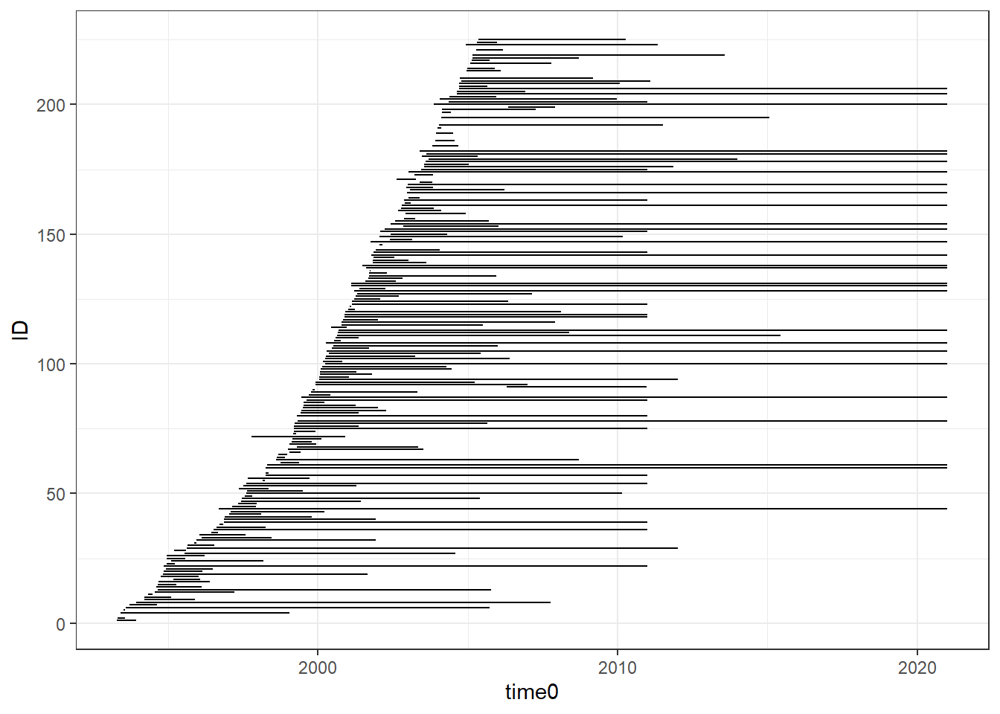
plot_dat <- survive_data %>%
arrange(desc(days_surv)) %>%
mutate(
ID = 1:nrow(survive_data)
)
p <- ggplot(plot_dat, aes(color=date_type)) +
geom_segment(aes(x=0,xend=days_surv,y=ID, yend=ID))+
labs(y="Participant ID", x="Days Survived Passed Diagnosis or Surgery")
pWarning: Removed 17 rows containing missing values (geom_segment).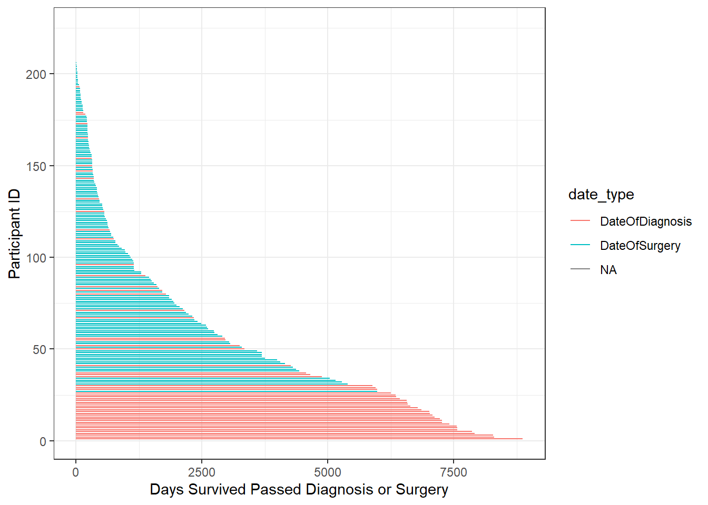
Analysis
The specific analysis data depends on which OTU is used as a control variable.
M <- dat.16s.s %>%
dplyr::group_by(OTU) %>%
dplyr::summarize(M=mean(Abundance, na.rm=T),
med = median(Abundance, na.rm = T),
q3 = quantile(Abundance, 0.6))
M# A tibble: 4 x 4
OTU M med q3
<fct> <dbl> <dbl> <dbl>
1 Fusobacterium nucleatum 3.56 0 0.2
2 Streptococcus spp.* 28.4 21.6 32.4
3 Campylobacter spp.* 0.446 0 0
4 Prevotella spp. 5.42 1.2 2.6# create microbiome indicators
dat_micro1 <- dat.16s.s %>%
filter(OTU == "Fusobacterium nucleatum") %>%
mutate(Fuso_Abund = Abundance,
Fuso = ifelse(Abundance > 0, "high", "low")) %>%
dplyr::select(accession.number, Fuso, Fuso_Abund, tissue, gender, age, Race, female, BMI.n, BarrettsHist, sample_type, pres, tumor.stage) %>%
ungroup()%>%
group_by(accession.number) %>%
mutate(
n = n(),
flag = ifelse(n==1 | (n>1 & tissue == "T"), 1, 0)
) %>%
filter(flag == 1)Adding missing grouping variables: `OTU`dat_micro2 <- dat.16s.s %>%
filter(OTU == "Streptococcus spp.*") %>%
mutate(Strept_Abund = Abundance,
Strept = ifelse(Abundance > 21.6, "high", "low")) %>%
dplyr::select(accession.number, Strept, Strept_Abund, tissue) %>%
group_by(accession.number) %>%
mutate(
n = n(),
flag = ifelse(n==1 | (n>1 & tissue == "T"), 1, 0)
) %>%
filter(flag == 1)Adding missing grouping variables: `OTU`dat_micro3 <- dat.16s.s %>%
filter(OTU == "Campylobacter spp.*") %>%
mutate(Campy_Abund = Abundance,
Campy = ifelse(Abundance > 0, "high", "low")) %>%
dplyr::select(accession.number, Campy, Campy_Abund, tissue) %>%
group_by(accession.number) %>%
mutate(
n = n(),
flag = ifelse(n==1 | (n>1 & tissue == "T"), 1, 0)
) %>%
filter(flag == 1)Adding missing grouping variables: `OTU`dat_micro4 <- dat.16s.s %>%
filter(OTU == "Prevotella spp.") %>%
mutate(Prevo_Abund=Abundance,
Prevo = ifelse(Abundance > 1.2, "high", "low")) %>%
dplyr::select(accession.number, Prevo, Prevo_Abund, tissue) %>%
group_by(accession.number) %>%
mutate(
n = n(),
flag = ifelse(n==1 | (n>1 & tissue == "T"), 1, 0)
) %>%
filter(flag == 1)Adding missing grouping variables: `OTU`# check for microbiome data
# IF multiple samples from same person, use the cancer sample
dat_micro <- full_join(dat_micro1[,-1],dat_micro2[,2:4])Joining, by = "accession.number"dat_micro <- full_join(dat_micro,dat_micro3[,2:4])Joining, by = "accession.number"dat_micro <- full_join(dat_micro,dat_micro4[,2:4])Joining, by = "accession.number"# subset survival dataset
# => only those with surg date
sub_dat_survival <- survive_data %>%
filter(date_type == "DateOfSurgery") %>%
mutate(
# revise "survival" to 5 years"
# 0 = survived, 1 = died
status_observed_5yr = ifelse(as.numeric(days_surv) > 1825, 0, 1),
time0 = as.Date(date_start),
time_odc=as.Date(`DOD or censor`),
ID = as.numeric(as.factor(Accession)),
etime = as.numeric(days_surv),
etime_5yr = ifelse(as.numeric(days_surv) > 1825, 1825, as.numeric(days_surv))) %>%
dplyr::select(Accession, ID, time0, time_odc, etime,etime_5yr, days_surv, status_observed, status_observed_5yr)
# joining survival & 16s data
full_dat <- inner_join(sub_dat_survival, dat_micro, by=c("Accession"="accession.number")) %>%
mutate(
Fuso = factor(Fuso, levels=c("low", "high"), ordered=T),
Strept = factor(Strept, levels=c("low", "high"), ordered=T),
Campy = factor(Campy, levels=c("low", "high"), ordered=T),
Prevo = factor(Prevo, levels=c("low", "high"), ordered=T),
all_low = ifelse(Fuso == "low" & Strept == "low" & Campy == "low" & Prevo == "low", 1, 0),
all_high = ifelse(Fuso == "high" & Strept == "high" & Campy == "high" & Prevo == "high", 1, 0)
)The following analysis is based on the overall survival probability regardless of microbiome information.
library(rms)
library(survival)
library(survminer)
library(lubridate)
# Generate right-censored survival time variable
full_dat$years <- as.numeric(full_dat$days_surv /365.25)
units(full_dat$years) <- 'Year'
full_dat$S <- Surv(full_dat$years , full_dat$status_observed)
# fit null model
f0 <- survfit(Surv(years, status_observed) ~ 1, data = full_dat)
ggsurvplot(
fit = survfit(Surv(years, status_observed) ~ 1, data = full_dat),
xlab = "Years",
ylab = "Overall survival probability")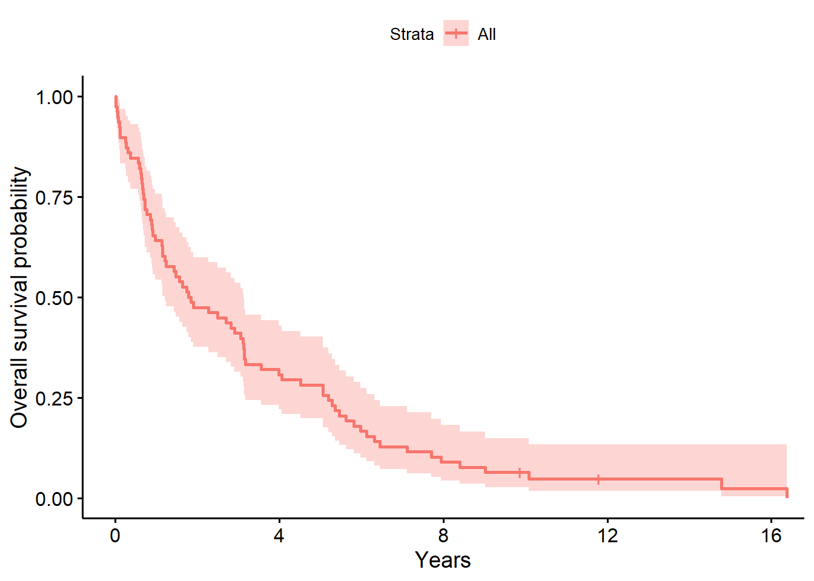
f0 # overall survival timeCall: survfit(formula = Surv(years, status_observed) ~ 1, data = full_dat)
n events median 0.95LCL 0.95UCL
78.00 76.00 1.82 1.21 3.14 summary(f0, times = 1) # survival probability at 1 yearCall: survfit(formula = Surv(years, status_observed) ~ 1, data = full_dat)
time n.risk n.event survival std.err lower 95% CI upper 95% CI
1 50 28 0.641 0.0543 0.543 0.757summary(coxph(Surv(years, status_observed) ~ 1, data = full_dat))Call: coxph(formula = Surv(years, status_observed) ~ 1, data = full_dat)
Null model
log likelihood= -262.2
n= 78 # getting the number at risk over years 0:10
summary(f0, times = c(0:10))Call: survfit(formula = Surv(years, status_observed) ~ 1, data = full_dat)
time n.risk n.event survival std.err lower 95% CI upper 95% CI
0 78 0 1.0000 0.0000 1.0000 1.000
1 50 28 0.6410 0.0543 0.5429 0.757
2 37 13 0.4744 0.0565 0.3755 0.599
3 32 5 0.4103 0.0557 0.3144 0.535
4 24 8 0.3077 0.0523 0.2206 0.429
5 22 2 0.2821 0.0510 0.1980 0.402
6 13 9 0.1667 0.0422 0.1015 0.274
7 10 3 0.1282 0.0379 0.0719 0.229
8 7 3 0.0897 0.0324 0.0443 0.182
9 6 1 0.0769 0.0302 0.0357 0.166
10 4 1 0.0641 0.0277 0.0275 0.150The baseline model above for the survival data shows that time to death after surgery is typically between 1.21 to 3.14 years (median=1.82 years). The one year after surgery survival probability is .61 (95% CI, [.54, .76]).
Fuso
f1 <- survfit(Surv(years, status_observed) ~ 1 + Fuso, data = full_dat)
ggsurvplot(
fit = survfit(
Surv(years, status_observed) ~ 1 + Fuso,
data = full_dat,robust = T
),
conf.int = T,
xlab = "Years",
ylab = "Overall survival probability")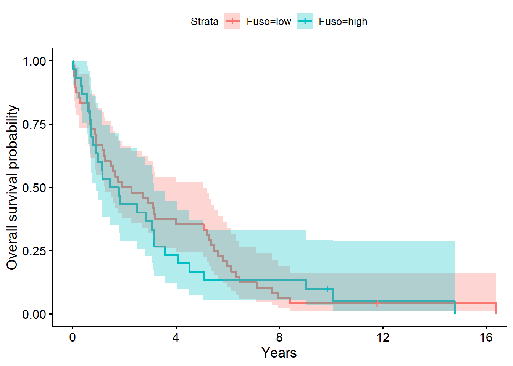
f1# overall survival timeCall: survfit(formula = Surv(years, status_observed) ~ 1 + Fuso, data = full_dat)
n events median 0.95LCL 0.95UCL
Fuso=low 48 47 2.09 1.240 5.06
Fuso=high 30 29 1.61 0.898 3.15summary(f1, times = 1) # survival probability at 1 yearCall: survfit(formula = Surv(years, status_observed) ~ 1 + Fuso, data = full_dat)
Fuso=low
time n.risk n.event survival std.err lower 95% CI
1.000 32.000 16.000 0.667 0.068 0.546
upper 95% CI
0.814
Fuso=high
time n.risk n.event survival std.err lower 95% CI
1.0000 18.0000 12.0000 0.6000 0.0894 0.4480
upper 95% CI
0.8036 coxph(Surv(years, status_observed) ~ 1 + I(Fuso == "high"), data = full_dat)Call:
coxph(formula = Surv(years, status_observed) ~ 1 + I(Fuso ==
"high"), data = full_dat)
coef exp(coef) se(coef) z p
I(Fuso == "high")TRUE 0.1 1.1 0.2 0.5 0.6
Likelihood ratio test=0.2 on 1 df, p=0.6
n= 78, number of events= 76 # getting the number at risk over years 0:10
summary(f1, times = c(0:10))Call: survfit(formula = Surv(years, status_observed) ~ 1 + Fuso, data = full_dat)
Fuso=low
time n.risk n.event survival std.err lower 95% CI upper 95% CI
0 48 0 1.0000 0.0000 1.0000 1.000
1 32 16 0.6667 0.0680 0.5458 0.814
2 24 8 0.5000 0.0722 0.3768 0.663
3 21 3 0.4375 0.0716 0.3174 0.603
4 17 4 0.3542 0.0690 0.2417 0.519
5 17 0 0.3542 0.0690 0.2417 0.519
6 9 8 0.1875 0.0563 0.1041 0.338
7 6 3 0.1250 0.0477 0.0591 0.264
8 3 3 0.0625 0.0349 0.0209 0.187
9 2 1 0.0417 0.0288 0.0107 0.162
10 2 0 0.0417 0.0288 0.0107 0.162
Fuso=high
time n.risk n.event survival std.err lower 95% CI upper 95% CI
0 30 0 1.000 0.0000 1.0000 1.000
1 18 12 0.600 0.0894 0.4480 0.804
2 13 5 0.433 0.0905 0.2878 0.652
3 11 2 0.367 0.0880 0.2291 0.587
4 7 4 0.233 0.0772 0.1220 0.446
5 5 2 0.167 0.0680 0.0749 0.371
6 4 1 0.133 0.0621 0.0535 0.332
7 4 0 0.133 0.0621 0.0535 0.332
8 4 0 0.133 0.0621 0.0535 0.332
9 4 0 0.133 0.0621 0.0535 0.332
10 2 1 0.100 0.0548 0.0342 0.293# compare Fuso groups
survdiff(Surv(years, status_observed) ~ Fuso, data = full_dat)Call:
survdiff(formula = Surv(years, status_observed) ~ Fuso, data = full_dat)
N Observed Expected (O-E)^2/E (O-E)^2/V
Fuso=low 48 47 49 0.0849 0.248
Fuso=high 30 29 27 0.1545 0.248
Chisq= 0.2 on 1 degrees of freedom, p= 0.6 The model above for the survival decomposed by Fuso abundance strata (low versus high; i.e., Fuso abundance greater than 0, the median) shows that time to death after surgery is between 1.24 to 5.06 years (median=2.09 years) for low abundance. The one year after surgery survival probability is .67 (95% CI, [.55, .81]). For individuals with high Fuso abundance, the time to death after surgery is between 0.90 to 3.15 years (median=1.61 years) for high abundance. The one year after surgery survival probability is .60 (95% CI, [.45, .80]).
The LRT comparing the model with Fuso to the baseline model was not significant (\(G^2(1)=0.2, p=0.60\)). Giving evidence that Fuso (presence (high) versus absence (low)) did not significantly differentiate survival time in this sample.
With Covariates
f1.1 <- survfit(Surv(years, status_observed) ~ 1 + Fuso + I(age > median(age) )+ female, data = full_dat)
f1.1# overall survival timeCall: survfit(formula = Surv(years, status_observed) ~ 1 + Fuso + I(age >
median(age)) + female, data = full_dat)
n events median 0.95LCL
Fuso=low, I(age > median(age))=FALSE, female=0 22 22 2.0890 1.2101
Fuso=low, I(age > median(age))=FALSE, female=1 5 5 1.4730 0.2683
Fuso=low, I(age > median(age))=TRUE , female=0 18 17 5.1759 1.5661
Fuso=low, I(age > median(age))=TRUE , female=1 3 3 0.0438 0.0192
Fuso=high, I(age > median(age))=FALSE, female=0 8 8 0.8501 0.5969
Fuso=high, I(age > median(age))=FALSE, female=1 4 4 1.4634 0.7173
Fuso=high, I(age > median(age))=TRUE , female=0 16 15 2.9432 0.8980
Fuso=high, I(age > median(age))=TRUE , female=1 2 2 1.2676 0.6817
0.95UCL
Fuso=low, I(age > median(age))=FALSE, female=0 5.63
Fuso=low, I(age > median(age))=FALSE, female=1 NA
Fuso=low, I(age > median(age))=TRUE , female=0 7.72
Fuso=low, I(age > median(age))=TRUE , female=1 NA
Fuso=high, I(age > median(age))=FALSE, female=0 NA
Fuso=high, I(age > median(age))=FALSE, female=1 NA
Fuso=high, I(age > median(age))=TRUE , female=0 NA
Fuso=high, I(age > median(age))=TRUE , female=1 NAsummary(f1.1, times = 1, extend=T) # survival probability at 1 yearCall: survfit(formula = Surv(years, status_observed) ~ 1 + Fuso + I(age >
median(age)) + female, data = full_dat)
Fuso=low, I(age > median(age))=FALSE, female=0
time n.risk n.event survival std.err lower 95% CI
1.0000 15.0000 7.0000 0.6818 0.0993 0.5125
upper 95% CI
0.9071
Fuso=low, I(age > median(age))=FALSE, female=1
time n.risk n.event survival std.err lower 95% CI
1.000 3.000 2.000 0.600 0.219 0.293
upper 95% CI
1.000
Fuso=low, I(age > median(age))=TRUE , female=0
time n.risk n.event survival std.err lower 95% CI
1.000 14.000 4.000 0.778 0.098 0.608
upper 95% CI
0.996
Fuso=low, I(age > median(age))=TRUE , female=1
time n.risk n.event survival std.err lower 95% CI
1 0 3 0 NaN NA
upper 95% CI
NA
Fuso=high, I(age > median(age))=FALSE, female=0
time n.risk n.event survival std.err lower 95% CI
1.000 3.000 5.000 0.375 0.171 0.153
upper 95% CI
0.917
Fuso=high, I(age > median(age))=FALSE, female=1
time n.risk n.event survival std.err lower 95% CI
1.000 3.000 1.000 0.750 0.217 0.426
upper 95% CI
1.000
Fuso=high, I(age > median(age))=TRUE , female=0
time n.risk n.event survival std.err lower 95% CI
1.000 11.000 5.000 0.688 0.116 0.494
upper 95% CI
0.957
Fuso=high, I(age > median(age))=TRUE , female=1
time n.risk n.event survival std.err lower 95% CI
1.000 1.000 1.000 0.500 0.354 0.125
upper 95% CI
1.000 summary(coxph(Surv(years, status_observed) ~ 1 + I(Fuso == "high") + I(age > median(age)) + female, data = full_dat))Call:
coxph(formula = Surv(years, status_observed) ~ 1 + I(Fuso ==
"high") + I(age > median(age)) + female, data = full_dat)
n= 78, number of events= 76
coef exp(coef) se(coef) z Pr(>|z|)
I(Fuso == "high")TRUE 0.0785 1.0817 0.2481 0.32 0.7517
I(age > median(age))TRUE -0.1893 0.8275 0.2476 -0.76 0.4446
female 0.9855 2.6792 0.3368 2.93 0.0034 **
---
Signif. codes: 0 '***' 0.001 '**' 0.01 '*' 0.05 '.' 0.1 ' ' 1
exp(coef) exp(-coef) lower .95 upper .95
I(Fuso == "high")TRUE 1.082 0.925 0.665 1.76
I(age > median(age))TRUE 0.828 1.208 0.509 1.34
female 2.679 0.373 1.385 5.18
Concordance= 0.607 (se = 0.034 )
Likelihood ratio test= 9.82 on 3 df, p=0.02
Wald test = 11.4 on 3 df, p=0.01
Score (logrank) test = 12.5 on 3 df, p=0.006Strept
f2 <- survfit(Surv(years, status_observed) ~ 1 + Strept, data = full_dat)
ggsurvplot(
fit = survfit(
Surv(years, status_observed) ~ 1 + Strept,
data = full_dat,robust = T
),
conf.int = T,
xlab = "Years",
ylab = "Overall survival probability")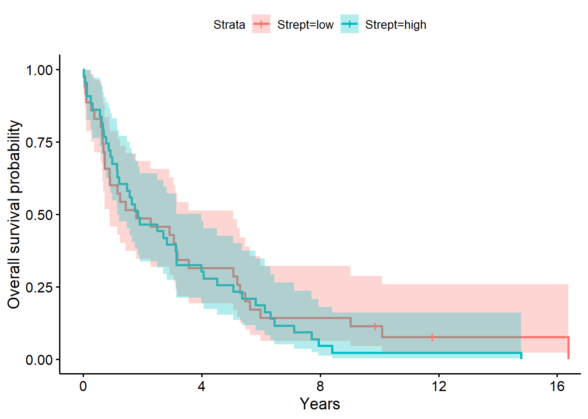
f2# overall survival timeCall: survfit(formula = Surv(years, status_observed) ~ 1 + Strept,
data = full_dat)
n events median 0.95LCL 0.95UCL
Strept=low 35 33 1.78 0.882 5.06
Strept=high 43 43 1.85 1.153 3.99summary(f2, times = 1) # survival probability at 1 yearCall: survfit(formula = Surv(years, status_observed) ~ 1 + Strept,
data = full_dat)
Strept=low
time n.risk n.event survival std.err lower 95% CI
1.0000 21.0000 14.0000 0.6000 0.0828 0.4578
upper 95% CI
0.7864
Strept=high
time n.risk n.event survival std.err lower 95% CI
1.0000 29.0000 14.0000 0.6744 0.0715 0.5479
upper 95% CI
0.8301 summary(coxph(Surv(years, status_observed) ~ I(Strept == "high"), data = full_dat))Call:
coxph(formula = Surv(years, status_observed) ~ I(Strept == "high"),
data = full_dat)
n= 78, number of events= 76
coef exp(coef) se(coef) z Pr(>|z|)
I(Strept == "high")TRUE 0.140 1.150 0.236 0.59 0.55
exp(coef) exp(-coef) lower .95 upper .95
I(Strept == "high")TRUE 1.15 0.87 0.724 1.83
Concordance= 0.494 (se = 0.034 )
Likelihood ratio test= 0.35 on 1 df, p=0.6
Wald test = 0.35 on 1 df, p=0.6
Score (logrank) test = 0.35 on 1 df, p=0.6# getting the number at risk over years 0:10
summary(f2, times = c(0:10))Call: survfit(formula = Surv(years, status_observed) ~ 1 + Strept,
data = full_dat)
Strept=low
time n.risk n.event survival std.err lower 95% CI upper 95% CI
0 35 0 1.000 0.0000 1.0000 1.000
1 21 14 0.600 0.0828 0.4578 0.786
2 17 4 0.486 0.0845 0.3454 0.683
3 15 2 0.429 0.0836 0.2923 0.628
4 11 4 0.314 0.0785 0.1927 0.513
5 11 0 0.314 0.0785 0.1927 0.513
6 5 6 0.143 0.0591 0.0635 0.322
7 5 0 0.143 0.0591 0.0635 0.322
8 5 0 0.143 0.0591 0.0635 0.322
9 5 0 0.143 0.0591 0.0635 0.322
10 3 1 0.114 0.0538 0.0454 0.287
Strept=high
time n.risk n.event survival std.err lower 95% CI upper 95% CI
0 43 0 1.0000 0.0000 1.00000 1.000
1 29 14 0.6744 0.0715 0.54795 0.830
2 20 9 0.4651 0.0761 0.33757 0.641
3 17 3 0.3953 0.0746 0.27318 0.572
4 13 4 0.3023 0.0700 0.19199 0.476
5 11 2 0.2558 0.0665 0.15365 0.426
6 8 3 0.1860 0.0593 0.09957 0.348
7 5 3 0.1163 0.0489 0.05101 0.265
8 2 3 0.0465 0.0321 0.01202 0.180
9 1 1 0.0233 0.0230 0.00335 0.161
10 1 0 0.0233 0.0230 0.00335 0.161# compare groups
survdiff(Surv(years, status_observed) ~ Strept, data = full_dat)Call:
survdiff(formula = Surv(years, status_observed) ~ Strept, data = full_dat)
N Observed Expected (O-E)^2/E (O-E)^2/V
Strept=low 35 33 35.5 0.179 0.35
Strept=high 43 43 40.5 0.157 0.35
Chisq= 0.3 on 1 degrees of freedom, p= 0.6 The model above for the survival decomposed by Strepto abundance strata (low versus high; i.e., Strepto abundance greater than 0, the median) shows that time to death after surgery is between 0.88 to 5.06 years (median=1.78 years) for low abundance. The one year after surgery survival probability is .60 (95% CI, [.46, .79]). For individuals with high Strepto abundance, the time to death after surgery is between 1.15 to 3.99 years (median=1.85 years) for high abundance. The one year after surgery survival probability is .67 (95% CI, [.55, .83]).
The LRT comparing the model with Strepto to the baseline model was not significant (\(G^2(1)=0.3, p=0.60\)). Giving evidence that Strepto (high (greater than 21.6) versus low) did not significantly differentiate survival time in this sample.
With covariates
f2.1 <- survfit(Surv(years, status_observed) ~ 1 + Strept + I(age > median(age) )+ female, data = full_dat)
f2.1# overall survival timeCall: survfit(formula = Surv(years, status_observed) ~ 1 + Strept +
I(age > median(age)) + female, data = full_dat)
n events median 0.95LCL
Strept=low, I(age > median(age))=FALSE, female=0 15 15 2.272 0.7228
Strept=low, I(age > median(age))=FALSE, female=1 4 4 0.493 0.0794
Strept=low, I(age > median(age))=TRUE , female=0 14 12 3.362 1.4401
Strept=low, I(age > median(age))=TRUE , female=1 2 2 0.363 0.0438
Strept=high, I(age > median(age))=FALSE, female=0 15 15 1.747 0.9199
Strept=high, I(age > median(age))=FALSE, female=1 5 5 1.634 1.4730
Strept=high, I(age > median(age))=TRUE , female=0 20 20 3.569 1.1526
Strept=high, I(age > median(age))=TRUE , female=1 3 3 0.851 0.0192
0.95UCL
Strept=low, I(age > median(age))=FALSE, female=0 5.98
Strept=low, I(age > median(age))=FALSE, female=1 NA
Strept=low, I(age > median(age))=TRUE , female=0 NA
Strept=low, I(age > median(age))=TRUE , female=1 NA
Strept=high, I(age > median(age))=FALSE, female=0 5.82
Strept=high, I(age > median(age))=FALSE, female=1 NA
Strept=high, I(age > median(age))=TRUE , female=0 6.32
Strept=high, I(age > median(age))=TRUE , female=1 NAsummary(f2.1, times = 1, extend=T) # survival probability at 1 yearCall: survfit(formula = Surv(years, status_observed) ~ 1 + Strept +
I(age > median(age)) + female, data = full_dat)
Strept=low, I(age > median(age))=FALSE, female=0
time n.risk n.event survival std.err lower 95% CI
1.000 9.000 6.000 0.600 0.126 0.397
upper 95% CI
0.907
Strept=low, I(age > median(age))=FALSE, female=1
time n.risk n.event survival std.err lower 95% CI
1.0000 1.0000 3.0000 0.2500 0.2165 0.0458
upper 95% CI
1.0000
Strept=low, I(age > median(age))=TRUE , female=0
time n.risk n.event survival std.err lower 95% CI
1.000 11.000 3.000 0.786 0.110 0.598
upper 95% CI
1.000
Strept=low, I(age > median(age))=TRUE , female=1
time n.risk n.event survival std.err lower 95% CI
1 0 2 0 NaN NA
upper 95% CI
NA
Strept=high, I(age > median(age))=FALSE, female=0
time n.risk n.event survival std.err lower 95% CI
1.000 9.000 6.000 0.600 0.126 0.397
upper 95% CI
0.907
Strept=high, I(age > median(age))=FALSE, female=1
time n.risk n.event survival std.err lower 95% CI
1 5 0 1 0 1
upper 95% CI
1
Strept=high, I(age > median(age))=TRUE , female=0
time n.risk n.event survival std.err lower 95% CI
1.000 14.000 6.000 0.700 0.102 0.525
upper 95% CI
0.933
Strept=high, I(age > median(age))=TRUE , female=1
time n.risk n.event survival std.err lower 95% CI
1.0000 1.0000 2.0000 0.3333 0.2722 0.0673
upper 95% CI
1.0000 summary(coxph(Surv(years, status_observed) ~ 1 + I(Strept == "high") + I(age > median(age)) + female, data = full_dat))Call:
coxph(formula = Surv(years, status_observed) ~ 1 + I(Strept ==
"high") + I(age > median(age)) + female, data = full_dat)
n= 78, number of events= 76
coef exp(coef) se(coef) z Pr(>|z|)
I(Strept == "high")TRUE 0.069 1.071 0.243 0.28 0.7761
I(age > median(age))TRUE -0.183 0.833 0.245 -0.75 0.4554
female 0.986 2.680 0.338 2.92 0.0035 **
---
Signif. codes: 0 '***' 0.001 '**' 0.01 '*' 0.05 '.' 0.1 ' ' 1
exp(coef) exp(-coef) lower .95 upper .95
I(Strept == "high")TRUE 1.071 0.933 0.666 1.72
I(age > median(age))TRUE 0.833 1.200 0.516 1.35
female 2.680 0.373 1.383 5.19
Concordance= 0.594 (se = 0.035 )
Likelihood ratio test= 9.8 on 3 df, p=0.02
Wald test = 11.4 on 3 df, p=0.01
Score (logrank) test = 12.4 on 3 df, p=0.006Campy
f3 <- survfit(Surv(years, status_observed) ~ 1 + Campy, data = full_dat)
ggsurvplot(
fit = survfit(
Surv(years, status_observed) ~ 1 + Campy,
data = full_dat,robust = T
),
conf.int = T,
xlab = "Years",
ylab = "Overall survival probability")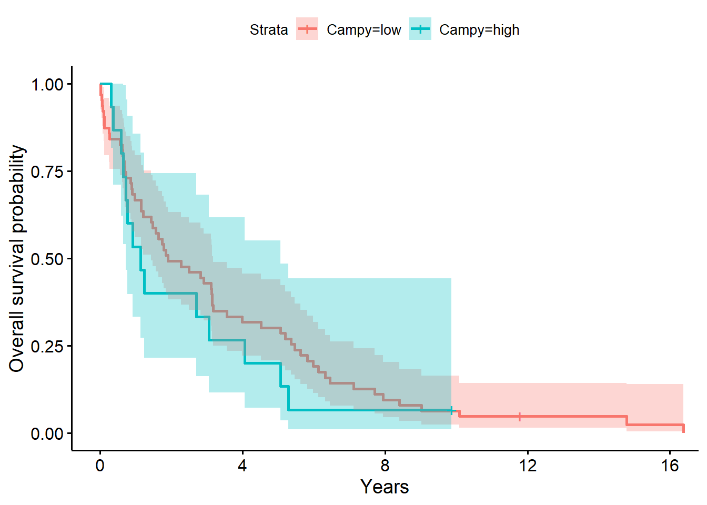
f3# overall survival timeCall: survfit(formula = Surv(years, status_observed) ~ 1 + Campy, data = full_dat)
n events median 0.95LCL 0.95UCL
Campy=low 63 62 1.91 1.440 3.17
Campy=high 15 14 1.14 0.723 5.06summary(f3, times = 1) # survival probability at 1 yearCall: survfit(formula = Surv(years, status_observed) ~ 1 + Campy, data = full_dat)
Campy=low
time n.risk n.event survival std.err lower 95% CI
1.0000 42.0000 21.0000 0.6667 0.0594 0.5599
upper 95% CI
0.7939
Campy=high
time n.risk n.event survival std.err lower 95% CI
1.000 8.000 7.000 0.533 0.129 0.332
upper 95% CI
0.856 summary(coxph(Surv(years, status_observed) ~ 1 + I(Campy == "high"), data = full_dat))Call:
coxph(formula = Surv(years, status_observed) ~ 1 + I(Campy ==
"high"), data = full_dat)
n= 78, number of events= 76
coef exp(coef) se(coef) z Pr(>|z|)
I(Campy == "high")TRUE 0.271 1.311 0.300 0.9 0.37
exp(coef) exp(-coef) lower .95 upper .95
I(Campy == "high")TRUE 1.31 0.763 0.729 2.36
Concordance= 0.522 (se = 0.024 )
Likelihood ratio test= 0.77 on 1 df, p=0.4
Wald test = 0.82 on 1 df, p=0.4
Score (logrank) test = 0.82 on 1 df, p=0.4# getting the number at risk over years 0:10
summary(f3, times = c(0:10))Call: survfit(formula = Surv(years, status_observed) ~ 1 + Campy, data = full_dat)
Campy=low
time n.risk n.event survival std.err lower 95% CI upper 95% CI
0 63 0 1.0000 0.0000 1.0000 1.000
1 42 21 0.6667 0.0594 0.5599 0.794
2 31 11 0.4921 0.0630 0.3829 0.632
3 27 4 0.4286 0.0623 0.3222 0.570
4 20 7 0.3175 0.0586 0.2210 0.456
5 19 1 0.3016 0.0578 0.2071 0.439
6 12 7 0.1905 0.0495 0.1145 0.317
7 9 3 0.1429 0.0441 0.0780 0.262
8 6 3 0.0952 0.0370 0.0445 0.204
9 5 1 0.0794 0.0341 0.0342 0.184
10 4 1 0.0635 0.0307 0.0246 0.164
Campy=high
time n.risk n.event survival std.err lower 95% CI upper 95% CI
0 15 0 1.0000 0.0000 1.0000 1.000
1 8 7 0.5333 0.1288 0.3322 0.856
2 6 2 0.4000 0.1265 0.2152 0.743
3 5 1 0.3333 0.1217 0.1630 0.682
4 4 1 0.2667 0.1142 0.1152 0.617
5 3 1 0.2000 0.1033 0.0727 0.550
6 1 2 0.0667 0.0644 0.0100 0.443
7 1 0 0.0667 0.0644 0.0100 0.443
8 1 0 0.0667 0.0644 0.0100 0.443
9 1 0 0.0667 0.0644 0.0100 0.443# compare groups
survdiff(Surv(years, status_observed) ~ Campy, data = full_dat)Call:
survdiff(formula = Surv(years, status_observed) ~ Campy, data = full_dat)
N Observed Expected (O-E)^2/E (O-E)^2/V
Campy=low 63 62 64.8 0.118 0.816
Campy=high 15 14 11.2 0.680 0.816
Chisq= 0.8 on 1 degrees of freedom, p= 0.4 The model above for the survival decomposed by Campy abundance strata (low versus high; i.e., Campy abundance greater than 0, the median) shows that time to death after surgery is between 1.44 to 3.17 years (median=1.91 years) for low abundance. The one year after surgery survival probability is .67 (95% CI, [.56, .79]). For individuals with high Campy abundance, the time to death after surgery is between 0.72 to 5.06 years (median=1.14 years) for high abundance. The one year after surgery survival probability is .53 (95% CI, [.33, .86]).
The LRT comparing the model with Campy to the baseline model was not significant (\(G^2(1)=0.8, p=0.40\)). Giving evidence that Campy (presence (high) versus absence (low)) did not significantly differentiate survival time in this sample.
With Covariates
f3.1 <- survfit(Surv(years, status_observed) ~ 1 + Campy + I(age > median(age) )+ female, data = full_dat)
f3.1# overall survival timeCall: survfit(formula = Surv(years, status_observed) ~ 1 + Campy +
I(age > median(age)) + female, data = full_dat)
n events median 0.95LCL
Campy=low, I(age > median(age))=FALSE, female=0 23 23 2.908 1.2101
Campy=low, I(age > median(age))=FALSE, female=1 8 8 1.554 0.7173
Campy=low, I(age > median(age))=TRUE , female=0 27 26 3.170 1.4401
Campy=low, I(age > median(age))=TRUE , female=1 5 5 0.682 0.0438
Campy=high, I(age > median(age))=FALSE, female=0 7 7 0.723 0.5969
Campy=high, I(age > median(age))=FALSE, female=1 1 1 1.144 NA
Campy=high, I(age > median(age))=TRUE , female=0 7 6 4.055 0.7748
0.95UCL
Campy=low, I(age > median(age))=FALSE, female=0 5.82
Campy=low, I(age > median(age))=FALSE, female=1 NA
Campy=low, I(age > median(age))=TRUE , female=0 6.14
Campy=low, I(age > median(age))=TRUE , female=1 NA
Campy=high, I(age > median(age))=FALSE, female=0 NA
Campy=high, I(age > median(age))=FALSE, female=1 NA
Campy=high, I(age > median(age))=TRUE , female=0 NAsummary(f3.1, times = 1, extend=T) # survival probability at 1 yearCall: survfit(formula = Surv(years, status_observed) ~ 1 + Campy +
I(age > median(age)) + female, data = full_dat)
Campy=low, I(age > median(age))=FALSE, female=0
time n.risk n.event survival std.err lower 95% CI
1.0000 16.0000 7.0000 0.6957 0.0959 0.5309
upper 95% CI
0.9116
Campy=low, I(age > median(age))=FALSE, female=1
time n.risk n.event survival std.err lower 95% CI
1.000 5.000 3.000 0.625 0.171 0.365
upper 95% CI
1.000
Campy=low, I(age > median(age))=TRUE , female=0
time n.risk n.event survival std.err lower 95% CI
1.0000 20.0000 7.0000 0.7407 0.0843 0.5926
upper 95% CI
0.9259
Campy=low, I(age > median(age))=TRUE , female=1
time n.risk n.event survival std.err lower 95% CI
1.0000 1.0000 4.0000 0.2000 0.1789 0.0346
upper 95% CI
1.0000
Campy=high, I(age > median(age))=FALSE, female=0
time n.risk n.event survival std.err lower 95% CI
1.0000 2.0000 5.0000 0.2857 0.1707 0.0886
upper 95% CI
0.9218
Campy=high, I(age > median(age))=FALSE, female=1
time n.risk n.event survival std.err lower 95% CI
1 1 0 1 0 1
upper 95% CI
1
Campy=high, I(age > median(age))=TRUE , female=0
time n.risk n.event survival std.err lower 95% CI
1.000 5.000 2.000 0.714 0.171 0.447
upper 95% CI
1.000 summary(coxph(Surv(years, status_observed) ~ 1 + I(Campy == "high") + I(age > median(age)) + female, data = full_dat))Call:
coxph(formula = Surv(years, status_observed) ~ 1 + I(Campy ==
"high") + I(age > median(age)) + female, data = full_dat)
n= 78, number of events= 76
coef exp(coef) se(coef) z Pr(>|z|)
I(Campy == "high")TRUE 0.421 1.523 0.306 1.37 0.1695
I(age > median(age))TRUE -0.216 0.806 0.246 -0.88 0.3807
female 1.047 2.850 0.334 3.14 0.0017 **
---
Signif. codes: 0 '***' 0.001 '**' 0.01 '*' 0.05 '.' 0.1 ' ' 1
exp(coef) exp(-coef) lower .95 upper .95
I(Campy == "high")TRUE 1.523 0.657 0.836 2.78
I(age > median(age))TRUE 0.806 1.241 0.497 1.31
female 2.850 0.351 1.481 5.48
Concordance= 0.601 (se = 0.034 )
Likelihood ratio test= 11.5 on 3 df, p=0.009
Wald test = 13.1 on 3 df, p=0.005
Score (logrank) test = 14.1 on 3 df, p=0.003Prevo
f4 <- survfit(Surv(years, status_observed) ~ 1 + Prevo, data = full_dat)
ggsurvplot(
fit = survfit(
Surv(years, status_observed) ~ 1 + Prevo,
data = full_dat,robust = T
),
conf.int = T,
xlab = "Years",
ylab = "Overall survival probability")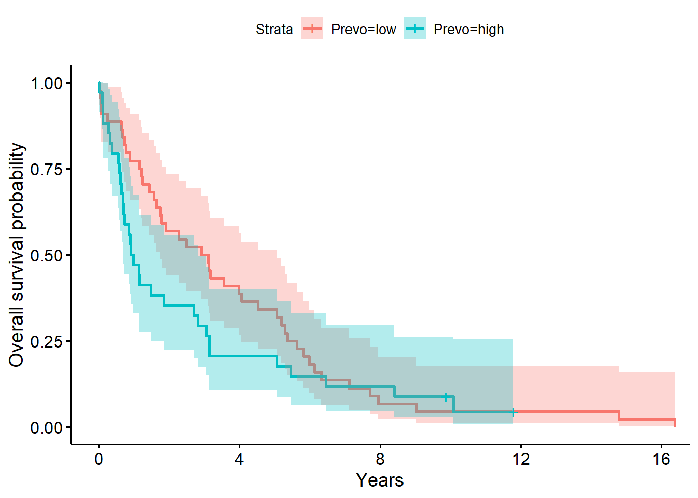
f4# overall survival timeCall: survfit(formula = Surv(years, status_observed) ~ 1 + Prevo, data = full_dat)
n events median 0.95LCL 0.95UCL
Prevo=low 44 44 3.016 1.747 5.06
Prevo=high 34 32 0.949 0.695 2.83summary(f4, times = 1) # survival probability at 1 yearCall: survfit(formula = Surv(years, status_observed) ~ 1 + Prevo, data = full_dat)
Prevo=low
time n.risk n.event survival std.err lower 95% CI
1.0000 34.0000 10.0000 0.7727 0.0632 0.6583
upper 95% CI
0.9070
Prevo=high
time n.risk n.event survival std.err lower 95% CI
1.0000 16.0000 18.0000 0.4706 0.0856 0.3295
upper 95% CI
0.6722 summary(coxph(Surv(years, status_observed) ~ I(Prevo == "high"), data = full_dat))Call:
coxph(formula = Surv(years, status_observed) ~ I(Prevo == "high"),
data = full_dat)
n= 78, number of events= 76
coef exp(coef) se(coef) z Pr(>|z|)
I(Prevo == "high")TRUE 0.296 1.344 0.237 1.25 0.21
exp(coef) exp(-coef) lower .95 upper .95
I(Prevo == "high")TRUE 1.34 0.744 0.845 2.14
Concordance= 0.568 (se = 0.033 )
Likelihood ratio test= 1.54 on 1 df, p=0.2
Wald test = 1.56 on 1 df, p=0.2
Score (logrank) test = 1.57 on 1 df, p=0.2# getting the number at risk over years 0:10
summary(f4, times = c(0:10))Call: survfit(formula = Surv(years, status_observed) ~ 1 + Prevo, data = full_dat)
Prevo=low
time n.risk n.event survival std.err lower 95% CI upper 95% CI
0 44 0 1.0000 0.0000 1.0000 1.000
1 34 10 0.7727 0.0632 0.6583 0.907
2 25 9 0.5682 0.0747 0.4392 0.735
3 22 3 0.5000 0.0754 0.3721 0.672
4 17 5 0.3864 0.0734 0.2662 0.561
5 15 2 0.3409 0.0715 0.2261 0.514
6 8 7 0.1818 0.0581 0.0971 0.340
7 6 2 0.1364 0.0517 0.0648 0.287
8 3 3 0.0682 0.0380 0.0229 0.203
9 3 0 0.0682 0.0380 0.0229 0.203
10 2 1 0.0455 0.0314 0.0117 0.176
Prevo=high
time n.risk n.event survival std.err lower 95% CI upper 95% CI
0 34 0 1.0000 0.0000 1.0000 1.000
1 16 18 0.4706 0.0856 0.3295 0.672
2 12 4 0.3529 0.0820 0.2239 0.556
3 10 2 0.2941 0.0781 0.1747 0.495
4 7 3 0.2059 0.0693 0.1064 0.398
5 7 0 0.2059 0.0693 0.1064 0.398
6 5 2 0.1471 0.0607 0.0655 0.330
7 4 1 0.1176 0.0553 0.0469 0.295
8 4 0 0.1176 0.0553 0.0469 0.295
9 3 1 0.0882 0.0486 0.0299 0.260
10 2 0 0.0882 0.0486 0.0299 0.260# compare groups
survdiff(Surv(years, status_observed) ~ Prevo, data = full_dat)Call:
survdiff(formula = Surv(years, status_observed) ~ Prevo, data = full_dat)
N Observed Expected (O-E)^2/E (O-E)^2/V
Prevo=low 44 44 49.1 0.534 1.56
Prevo=high 34 32 26.9 0.976 1.56
Chisq= 1.6 on 1 degrees of freedom, p= 0.2 The model above for the survival decomposed by Prevo abundance strata (low versus high; i.e., Prevo abundance greater than 1.2, the median) shows that time to death after surgery is between 1.75 to 5.06 years (median=3.02 years) for low abundance. The one year after surgery survival probability is .78 (95% CI, [.65, .91]). For individuals with high Prevo abundance, the time to death after surgery is between 0.70 to 2.83 years (median=0.95 years) for high abundance. The one year after surgery survival probability is .47 (95% CI, [.33, .67]).
The LRT comparing the model with Prevo to the baseline model was not significant (\(G^2(1)=2.0, p=0.20\)). Giving evidence that Prevo (presence (high) versus absence (low)) did not significantly differentiate survival time in this sample.
With covariates
f4.1 <- survfit(Surv(years, status_observed) ~ 1 + Prevo + I(age > median(age) )+ female, data = full_dat)
f4.1# overall survival timeCall: survfit(formula = Surv(years, status_observed) ~ 1 + Prevo +
I(age > median(age)) + female, data = full_dat)
n events median 0.95LCL
Prevo=low, I(age > median(age))=FALSE, female=0 20 20 3.0157 1.7467
Prevo=low, I(age > median(age))=FALSE, female=1 5 5 1.6345 0.7173
Prevo=low, I(age > median(age))=TRUE , female=0 18 18 4.0205 1.5661
Prevo=low, I(age > median(age))=TRUE , female=1 1 1 0.0438 NA
Prevo=high, I(age > median(age))=FALSE, female=0 10 10 0.6858 0.5695
Prevo=high, I(age > median(age))=FALSE, female=1 4 4 1.3087 0.2683
Prevo=high, I(age > median(age))=TRUE , female=0 16 14 2.9432 0.6954
Prevo=high, I(age > median(age))=TRUE , female=1 4 4 0.7666 0.0192
0.95UCL
Prevo=low, I(age > median(age))=FALSE, female=0 5.82
Prevo=low, I(age > median(age))=FALSE, female=1 NA
Prevo=low, I(age > median(age))=TRUE , female=0 6.32
Prevo=low, I(age > median(age))=TRUE , female=1 NA
Prevo=high, I(age > median(age))=FALSE, female=0 NA
Prevo=high, I(age > median(age))=FALSE, female=1 NA
Prevo=high, I(age > median(age))=TRUE , female=0 NA
Prevo=high, I(age > median(age))=TRUE , female=1 NAsummary(f4.1, times = 1, extend=T) # survival probability at 1 yearCall: survfit(formula = Surv(years, status_observed) ~ 1 + Prevo +
I(age > median(age)) + female, data = full_dat)
Prevo=low, I(age > median(age))=FALSE, female=0
time n.risk n.event survival std.err lower 95% CI
1.0000 16.0000 4.0000 0.8000 0.0894 0.6426
upper 95% CI
0.9960
Prevo=low, I(age > median(age))=FALSE, female=1
time n.risk n.event survival std.err lower 95% CI
1.000 3.000 2.000 0.600 0.219 0.293
upper 95% CI
1.000
Prevo=low, I(age > median(age))=TRUE , female=0
time n.risk n.event survival std.err lower 95% CI
1.0000 15.0000 3.0000 0.8333 0.0878 0.6778
upper 95% CI
1.0000
Prevo=low, I(age > median(age))=TRUE , female=1
time n.risk n.event survival std.err lower 95% CI
1 0 1 0 NaN NA
upper 95% CI
NA
Prevo=high, I(age > median(age))=FALSE, female=0
time n.risk n.event survival std.err lower 95% CI
1.0000 2.0000 8.0000 0.2000 0.1265 0.0579
upper 95% CI
0.6908
Prevo=high, I(age > median(age))=FALSE, female=1
time n.risk n.event survival std.err lower 95% CI
1.000 3.000 1.000 0.750 0.217 0.426
upper 95% CI
1.000
Prevo=high, I(age > median(age))=TRUE , female=0
time n.risk n.event survival std.err lower 95% CI
1.000 10.000 6.000 0.625 0.121 0.428
upper 95% CI
0.914
Prevo=high, I(age > median(age))=TRUE , female=1
time n.risk n.event survival std.err lower 95% CI
1.0000 1.0000 3.0000 0.2500 0.2165 0.0458
upper 95% CI
1.0000 summary(coxph(Surv(years, status_observed) ~ 1 + I(Prevo == "high") + I(age > median(age)) + female, data = full_dat))Call:
coxph(formula = Surv(years, status_observed) ~ 1 + I(Prevo ==
"high") + I(age > median(age)) + female, data = full_dat)
n= 78, number of events= 76
coef exp(coef) se(coef) z Pr(>|z|)
I(Prevo == "high")TRUE 0.268 1.307 0.254 1.05 0.2923
I(age > median(age))TRUE -0.257 0.774 0.255 -1.00 0.3150
female 0.911 2.488 0.342 2.67 0.0076 **
---
Signif. codes: 0 '***' 0.001 '**' 0.01 '*' 0.05 '.' 0.1 ' ' 1
exp(coef) exp(-coef) lower .95 upper .95
I(Prevo == "high")TRUE 1.307 0.765 0.794 2.15
I(age > median(age))TRUE 0.774 1.293 0.469 1.28
female 2.488 0.402 1.273 4.86
Concordance= 0.626 (se = 0.032 )
Likelihood ratio test= 10.8 on 3 df, p=0.01
Wald test = 12.4 on 3 df, p=0.006
Score (logrank) test = 13.4 on 3 df, p=0.004Combining Microbiome
## create all high vs. all low status for microbiome
full_dat <- full_dat %>%
mutate(
micro_high = ifelse(Fuso == "high" & Strept == "high" & Campy == "high" & Prevo == "high", 1, 0),
micro_low = ifelse(Fuso == "low" & Strept == "low" & Campy == "low" & Prevo == "low", 1, 0)
)
table(full_dat$micro_high)
0 1
76 2 table(full_dat$micro_low)
0 1
65 13 So only 2 cases were high on all four microbiome. We will not be able to get much useful information from this. So, I only used the low micro flag.
f5 <- survfit(Surv(years, status_observed) ~ 1 + micro_low, data = full_dat)
ggsurvplot(
fit = f5,
conf.int = T,
xlab = "Years",
ylab = "Overall survival probability")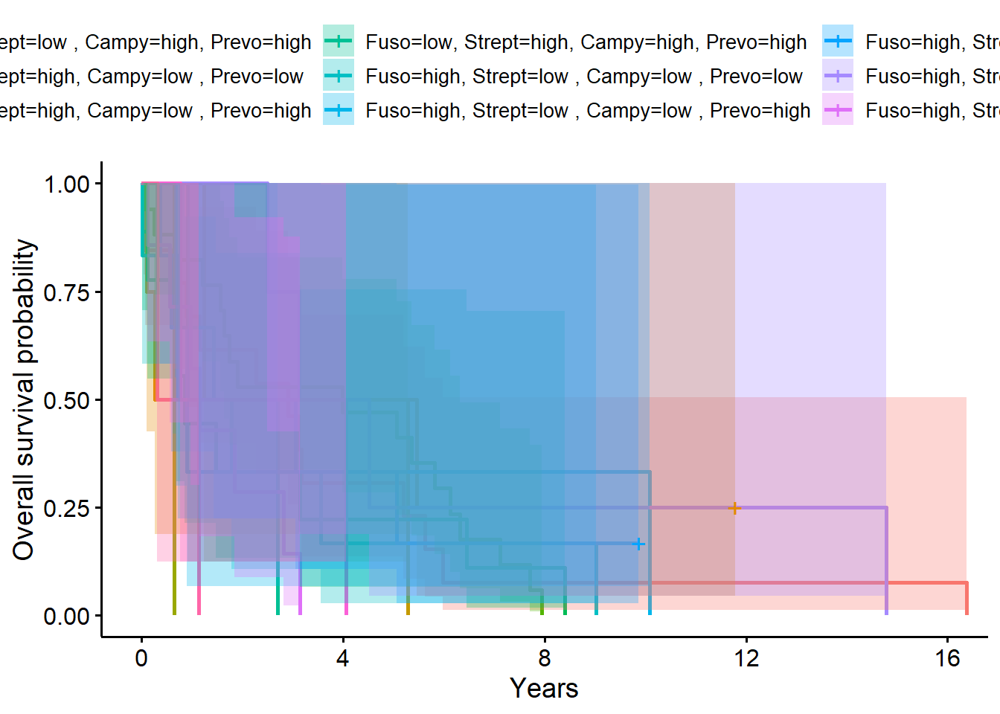
f5# overall survival timeCall: survfit(formula = Surv(years, status_observed) ~ 1 + micro_low,
data = full_dat)
n events median 0.95LCL 0.95UCL
micro_low=0 65 63 1.75 1.153 3.14
micro_low=1 13 13 2.91 0.882 NAsummary(f5, times = 1, extend=T) # survival probability at 1 yearCall: survfit(formula = Surv(years, status_observed) ~ 1 + micro_low,
data = full_dat)
micro_low=0
time n.risk n.event survival std.err lower 95% CI
1.0000 41.0000 24.0000 0.6308 0.0599 0.5237
upper 95% CI
0.7597
micro_low=1
time n.risk n.event survival std.err lower 95% CI
1.000 9.000 4.000 0.692 0.128 0.482
upper 95% CI
0.995 summary(coxph(Surv(years, status_observed) ~ micro_low, data = full_dat))Call:
coxph(formula = Surv(years, status_observed) ~ micro_low, data = full_dat)
n= 78, number of events= 76
coef exp(coef) se(coef) z Pr(>|z|)
micro_low -0.105 0.900 0.317 -0.33 0.74
exp(coef) exp(-coef) lower .95 upper .95
micro_low 0.9 1.11 0.483 1.68
Concordance= 0.506 (se = 0.025 )
Likelihood ratio test= 0.11 on 1 df, p=0.7
Wald test = 0.11 on 1 df, p=0.7
Score (logrank) test = 0.11 on 1 df, p=0.7With covariates
f5.1 <- survfit(Surv(years, status_observed) ~ 1 + micro_low + I(age > median(age) )+ female, data = full_dat)
f5.1# overall survival timeCall: survfit(formula = Surv(years, status_observed) ~ 1 + micro_low +
I(age > median(age)) + female, data = full_dat)
n events median 0.95LCL
micro_low=0, I(age > median(age))=FALSE, female=0 21 21 1.2101 0.6653
micro_low=0, I(age > median(age))=FALSE, female=1 8 8 1.5537 1.1444
micro_low=0, I(age > median(age))=TRUE , female=0 32 30 3.7700 1.5661
micro_low=0, I(age > median(age))=TRUE , female=1 4 4 0.7666 0.0192
micro_low=1, I(age > median(age))=FALSE, female=0 9 9 3.1239 2.2724
micro_low=1, I(age > median(age))=FALSE, female=1 1 1 0.0794 NA
micro_low=1, I(age > median(age))=TRUE , female=0 2 2 2.1643 1.1581
micro_low=1, I(age > median(age))=TRUE , female=1 1 1 0.0438 NA
0.95UCL
micro_low=0, I(age > median(age))=FALSE, female=0 4.52
micro_low=0, I(age > median(age))=FALSE, female=1 NA
micro_low=0, I(age > median(age))=TRUE , female=0 5.46
micro_low=0, I(age > median(age))=TRUE , female=1 NA
micro_low=1, I(age > median(age))=FALSE, female=0 NA
micro_low=1, I(age > median(age))=FALSE, female=1 NA
micro_low=1, I(age > median(age))=TRUE , female=0 NA
micro_low=1, I(age > median(age))=TRUE , female=1 NAsummary(f5.1, times = 1, extend=T) # survival probability at 1 yearCall: survfit(formula = Surv(years, status_observed) ~ 1 + micro_low +
I(age > median(age)) + female, data = full_dat)
micro_low=0, I(age > median(age))=FALSE, female=0
time n.risk n.event survival std.err lower 95% CI
1.000 11.000 10.000 0.524 0.109 0.348
upper 95% CI
0.788
micro_low=0, I(age > median(age))=FALSE, female=1
time n.risk n.event survival std.err lower 95% CI
1.000 6.000 2.000 0.750 0.153 0.503
upper 95% CI
1.000
micro_low=0, I(age > median(age))=TRUE , female=0
time n.risk n.event survival std.err lower 95% CI
1.0000 23.0000 9.0000 0.7188 0.0795 0.5787
upper 95% CI
0.8927
micro_low=0, I(age > median(age))=TRUE , female=1
time n.risk n.event survival std.err lower 95% CI
1.0000 1.0000 3.0000 0.2500 0.2165 0.0458
upper 95% CI
1.0000
micro_low=1, I(age > median(age))=FALSE, female=0
time n.risk n.event survival std.err lower 95% CI
1.000 7.000 2.000 0.778 0.139 0.549
upper 95% CI
1.000
micro_low=1, I(age > median(age))=FALSE, female=1
time n.risk n.event survival std.err lower 95% CI
1 0 1 0 NaN NA
upper 95% CI
NA
micro_low=1, I(age > median(age))=TRUE , female=0
time n.risk n.event survival std.err lower 95% CI
1 2 0 1 0 1
upper 95% CI
1
micro_low=1, I(age > median(age))=TRUE , female=1
time n.risk n.event survival std.err lower 95% CI
1 0 1 0 NaN NA
upper 95% CI
NA summary(coxph(Surv(years, status_observed) ~ 1 + micro_low + I(age > median(age)) + female, data = full_dat))Call:
coxph(formula = Surv(years, status_observed) ~ 1 + micro_low +
I(age > median(age)) + female, data = full_dat)
n= 78, number of events= 76
coef exp(coef) se(coef) z Pr(>|z|)
micro_low -0.0751 0.9277 0.3575 -0.21 0.8337
I(age > median(age))TRUE -0.1975 0.8208 0.2678 -0.74 0.4608
female 0.9822 2.6702 0.3473 2.83 0.0047 **
---
Signif. codes: 0 '***' 0.001 '**' 0.01 '*' 0.05 '.' 0.1 ' ' 1
exp(coef) exp(-coef) lower .95 upper .95
micro_low 0.928 1.078 0.460 1.87
I(age > median(age))TRUE 0.821 1.218 0.486 1.39
female 2.670 0.374 1.352 5.27
Concordance= 0.6 (se = 0.032 )
Likelihood ratio test= 9.76 on 3 df, p=0.02
Wald test = 11.4 on 3 df, p=0.01
Score (logrank) test = 12.4 on 3 df, p=0.006Rerun analyses with 5-year recode
# Generate right-censored survival time variable
full_dat$years_5y <- as.numeric(full_dat$etime_5yr /365.25)
units(full_dat$years_5y) <- 'Year'
full_dat$S_5yr <- Surv(full_dat$years_5y , full_dat$status_observed_5yr)
# fit null model
f0 <- survfit(S_5yr ~ 1, data = full_dat)
ggsurvplot(
fit = f0,
xlab = "Years",
ylab = "Overall survival probability")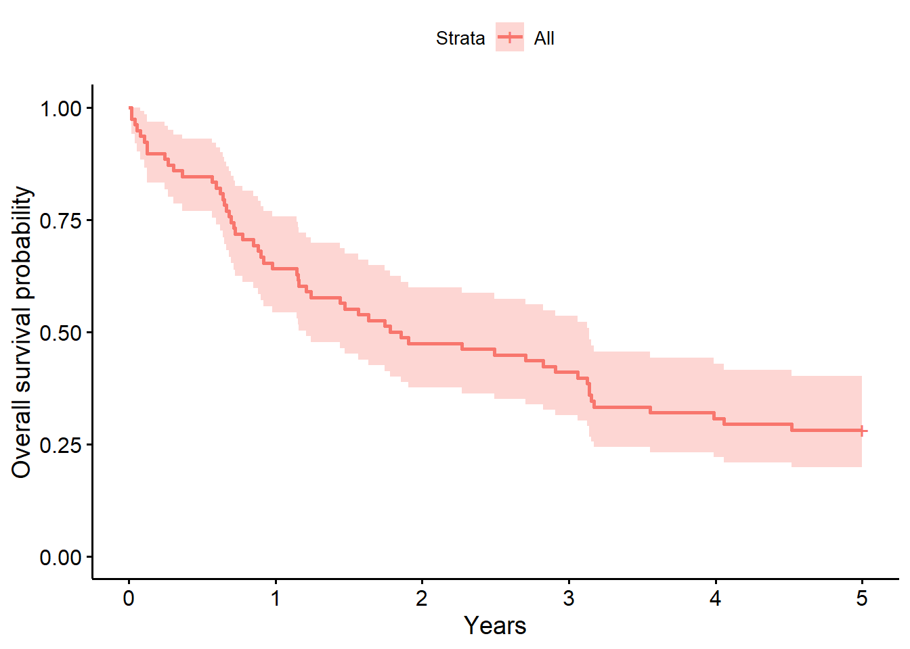
f0 # overall survival timeCall: survfit(formula = S_5yr ~ 1, data = full_dat)
n events median 0.95LCL 0.95UCL
78.00 56.00 1.82 1.21 3.14 summary(f0, times = 1) # survival probability at 1 yearCall: survfit(formula = S_5yr ~ 1, data = full_dat)
time n.risk n.event survival std.err lower 95% CI upper 95% CI
1 50 28 0.641 0.0543 0.543 0.757summary(coxph(S_5yr ~ 1, data = full_dat))Call: coxph(formula = S_5yr ~ 1, data = full_dat)
Null model
log likelihood= -216.5
n= 78 # getting the number at risk over years 0:10
summary(f0,times = 0:5, extend=T)Call: survfit(formula = S_5yr ~ 1, data = full_dat)
time n.risk n.event survival std.err lower 95% CI upper 95% CI
0 78 0 1.000 0.0000 1.000 1.000
1 50 28 0.641 0.0543 0.543 0.757
2 37 13 0.474 0.0565 0.376 0.599
3 32 5 0.410 0.0557 0.314 0.535
4 24 8 0.308 0.0523 0.221 0.429
5 0 2 0.282 0.0510 0.198 0.402The baseline model above for the survival data shows that time to death after surgery is typically between 1.21 to 3.14 years (median=1.82 years). The one year after surgery survival probability is .61 (95% CI, [.54, .76]).
Fuso
f1 <- survfit(S_5yr ~ 1 + Fuso, data = full_dat)
ggsurvplot(
fit = f1,
conf.int = T,
xlab = "Years",
ylab = "Overall survival probability")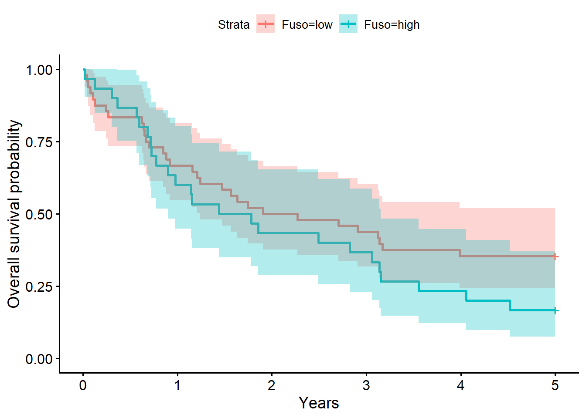
f1# overall survival timeCall: survfit(formula = S_5yr ~ 1 + Fuso, data = full_dat)
n events median 0.95LCL 0.95UCL
Fuso=low 48 31 2.09 1.240 NA
Fuso=high 30 25 1.61 0.898 3.15summary(f1, times = 1) # survival probability at 1 yearCall: survfit(formula = S_5yr ~ 1 + Fuso, data = full_dat)
Fuso=low
time n.risk n.event survival std.err lower 95% CI
1.000 32.000 16.000 0.667 0.068 0.546
upper 95% CI
0.814
Fuso=high
time n.risk n.event survival std.err lower 95% CI
1.0000 18.0000 12.0000 0.6000 0.0894 0.4480
upper 95% CI
0.8036 coxph(S_5yr ~ 1 + I(Fuso == "high"), data = full_dat)Call:
coxph(formula = S_5yr ~ 1 + I(Fuso == "high"), data = full_dat)
coef exp(coef) se(coef) z p
I(Fuso == "high")TRUE 0.4 1.4 0.3 1 0.2
Likelihood ratio test=2 on 1 df, p=0.2
n= 78, number of events= 56 # getting the number at risk over years 0:10
summary(f1, times = c(0:5), extend=T)Call: survfit(formula = S_5yr ~ 1 + Fuso, data = full_dat)
Fuso=low
time n.risk n.event survival std.err lower 95% CI upper 95% CI
0 48 0 1.000 0.0000 1.000 1.000
1 32 16 0.667 0.0680 0.546 0.814
2 24 8 0.500 0.0722 0.377 0.663
3 21 3 0.437 0.0716 0.317 0.603
4 17 4 0.354 0.0690 0.242 0.519
5 0 0 0.354 0.0690 0.242 0.519
Fuso=high
time n.risk n.event survival std.err lower 95% CI upper 95% CI
0 30 0 1.000 0.0000 1.0000 1.000
1 18 12 0.600 0.0894 0.4480 0.804
2 13 5 0.433 0.0905 0.2878 0.652
3 11 2 0.367 0.0880 0.2291 0.587
4 7 4 0.233 0.0772 0.1220 0.446
5 0 2 0.167 0.0680 0.0749 0.371# compare Fuso groups
survdiff(S_5yr ~ Fuso, data = full_dat)Call:
survdiff(formula = S_5yr ~ Fuso, data = full_dat)
N Observed Expected (O-E)^2/E (O-E)^2/V
Fuso=low 48 31 35.8 0.632 1.76
Fuso=high 30 25 20.2 1.116 1.76
Chisq= 1.8 on 1 degrees of freedom, p= 0.2 The model above for the survival decomposed by Fuso abundance strata (low versus high; i.e., Fuso abundance greater than 0, the median) shows that time to death after surgery is at least 1.24 years (median=2.09 years) for low abundance (note that the upper bound did not estimate indicating surival greater than 5 years). The one year after surgery survival probability is .67 (95% CI, [.55, .81]). For individuals with high Fuso abundance, the time to death after surgery is between 0.90 to 3.15 years (median=1.61 years) for high abundance. The one year after surgery survival probability is .60 (95% CI, [.45, .80]).
In the Cox Proportional Hazards model, high Fuso was not significantly associated with changes in the harzard (\(est=0.4, se = 0.3, p = .20, exp(est)=1.4)\)). The LRT comparing the model with Fuso to the baseline model was not significant (\(G^2(1)=0.2, p=0.60\)). Giving evidence that Fuso (presence (high) versus absence (low)) did not significantly differentiate survival time in this sample.
With Covariates
f1.1 <- survfit(S_5yr ~ 1 + Fuso + I(age > median(age) )+ female, data = full_dat)
f1.1# overall survival timeCall: survfit(formula = S_5yr ~ 1 + Fuso + I(age > median(age)) + female,
data = full_dat)
n events median 0.95LCL
Fuso=low, I(age > median(age))=FALSE, female=0 22 15 2.0890 1.2101
Fuso=low, I(age > median(age))=FALSE, female=1 5 5 1.4730 0.2683
Fuso=low, I(age > median(age))=TRUE , female=0 18 8 NA 1.5661
Fuso=low, I(age > median(age))=TRUE , female=1 3 3 0.0438 0.0192
Fuso=high, I(age > median(age))=FALSE, female=0 8 7 0.8501 0.5969
Fuso=high, I(age > median(age))=FALSE, female=1 4 4 1.4634 0.7173
Fuso=high, I(age > median(age))=TRUE , female=0 16 12 2.9432 0.8980
Fuso=high, I(age > median(age))=TRUE , female=1 2 2 1.2676 0.6817
0.95UCL
Fuso=low, I(age > median(age))=FALSE, female=0 NA
Fuso=low, I(age > median(age))=FALSE, female=1 NA
Fuso=low, I(age > median(age))=TRUE , female=0 NA
Fuso=low, I(age > median(age))=TRUE , female=1 NA
Fuso=high, I(age > median(age))=FALSE, female=0 NA
Fuso=high, I(age > median(age))=FALSE, female=1 NA
Fuso=high, I(age > median(age))=TRUE , female=0 NA
Fuso=high, I(age > median(age))=TRUE , female=1 NAsummary(f1.1, times = 1, extend=T) # survival probability at 1 yearCall: survfit(formula = S_5yr ~ 1 + Fuso + I(age > median(age)) + female,
data = full_dat)
Fuso=low, I(age > median(age))=FALSE, female=0
time n.risk n.event survival std.err lower 95% CI
1.0000 15.0000 7.0000 0.6818 0.0993 0.5125
upper 95% CI
0.9071
Fuso=low, I(age > median(age))=FALSE, female=1
time n.risk n.event survival std.err lower 95% CI
1.000 3.000 2.000 0.600 0.219 0.293
upper 95% CI
1.000
Fuso=low, I(age > median(age))=TRUE , female=0
time n.risk n.event survival std.err lower 95% CI
1.000 14.000 4.000 0.778 0.098 0.608
upper 95% CI
0.996
Fuso=low, I(age > median(age))=TRUE , female=1
time n.risk n.event survival std.err lower 95% CI
1 0 3 0 NaN NA
upper 95% CI
NA
Fuso=high, I(age > median(age))=FALSE, female=0
time n.risk n.event survival std.err lower 95% CI
1.000 3.000 5.000 0.375 0.171 0.153
upper 95% CI
0.917
Fuso=high, I(age > median(age))=FALSE, female=1
time n.risk n.event survival std.err lower 95% CI
1.000 3.000 1.000 0.750 0.217 0.426
upper 95% CI
1.000
Fuso=high, I(age > median(age))=TRUE , female=0
time n.risk n.event survival std.err lower 95% CI
1.000 11.000 5.000 0.688 0.116 0.494
upper 95% CI
0.957
Fuso=high, I(age > median(age))=TRUE , female=1
time n.risk n.event survival std.err lower 95% CI
1.000 1.000 1.000 0.500 0.354 0.125
upper 95% CI
1.000 summary(coxph(S_5yr ~ 1 + I(Fuso == "high") + I(age > median(age)) + female, data = full_dat))Call:
coxph(formula = S_5yr ~ 1 + I(Fuso == "high") + I(age > median(age)) +
female, data = full_dat)
n= 78, number of events= 56
coef exp(coef) se(coef) z Pr(>|z|)
I(Fuso == "high")TRUE 0.311 1.364 0.280 1.11 0.2662
I(age > median(age))TRUE -0.271 0.763 0.288 -0.94 0.3477
female 0.918 2.505 0.342 2.69 0.0072 **
---
Signif. codes: 0 '***' 0.001 '**' 0.01 '*' 0.05 '.' 0.1 ' ' 1
exp(coef) exp(-coef) lower .95 upper .95
I(Fuso == "high")TRUE 1.364 0.733 0.789 2.36
I(age > median(age))TRUE 0.763 1.311 0.434 1.34
female 2.505 0.399 1.282 4.89
Concordance= 0.618 (se = 0.037 )
Likelihood ratio test= 11 on 3 df, p=0.01
Wald test = 12.6 on 3 df, p=0.006
Score (logrank) test = 13.6 on 3 df, p=0.003Strept
f2 <- survfit(S_5yr ~ 1 + Strept, data = full_dat)
ggsurvplot(
fit = f2,
conf.int = T,
xlab = "Years",
ylab = "Overall survival probability")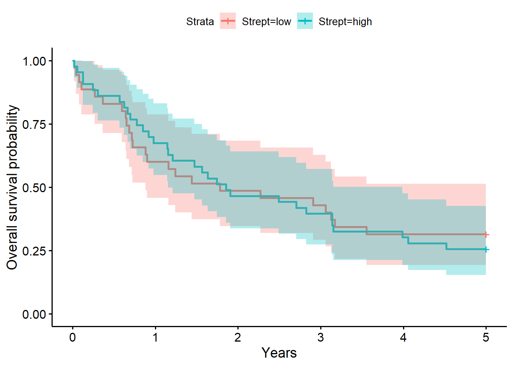
f2# overall survival timeCall: survfit(formula = S_5yr ~ 1 + Strept, data = full_dat)
n events median 0.95LCL 0.95UCL
Strept=low 35 24 1.78 0.882 NA
Strept=high 43 32 1.85 1.153 3.99summary(f2, times = 1) # survival probability at 1 yearCall: survfit(formula = S_5yr ~ 1 + Strept, data = full_dat)
Strept=low
time n.risk n.event survival std.err lower 95% CI
1.0000 21.0000 14.0000 0.6000 0.0828 0.4578
upper 95% CI
0.7864
Strept=high
time n.risk n.event survival std.err lower 95% CI
1.0000 29.0000 14.0000 0.6744 0.0715 0.5479
upper 95% CI
0.8301 summary(coxph(S_5yr ~ I(Strept == "high"), data = full_dat))Call:
coxph(formula = S_5yr ~ I(Strept == "high"), data = full_dat)
n= 78, number of events= 56
coef exp(coef) se(coef) z Pr(>|z|)
I(Strept == "high")TRUE 0.0466 1.0477 0.2702 0.17 0.86
exp(coef) exp(-coef) lower .95 upper .95
I(Strept == "high")TRUE 1.05 0.954 0.617 1.78
Concordance= 0.494 (se = 0.036 )
Likelihood ratio test= 0.03 on 1 df, p=0.9
Wald test = 0.03 on 1 df, p=0.9
Score (logrank) test = 0.03 on 1 df, p=0.9# getting the number at risk over years 0:10
summary(f2, times = c(0:5), extend=T)Call: survfit(formula = S_5yr ~ 1 + Strept, data = full_dat)
Strept=low
time n.risk n.event survival std.err lower 95% CI upper 95% CI
0 35 0 1.000 0.0000 1.000 1.000
1 21 14 0.600 0.0828 0.458 0.786
2 17 4 0.486 0.0845 0.345 0.683
3 15 2 0.429 0.0836 0.292 0.628
4 11 4 0.314 0.0785 0.193 0.513
5 0 0 0.314 0.0785 0.193 0.513
Strept=high
time n.risk n.event survival std.err lower 95% CI upper 95% CI
0 43 0 1.000 0.0000 1.000 1.000
1 29 14 0.674 0.0715 0.548 0.830
2 20 9 0.465 0.0761 0.338 0.641
3 17 3 0.395 0.0746 0.273 0.572
4 13 4 0.302 0.0700 0.192 0.476
5 0 2 0.256 0.0665 0.154 0.426# compare groups
survdiff(S_5yr ~ Strept, data = full_dat)Call:
survdiff(formula = S_5yr ~ Strept, data = full_dat)
N Observed Expected (O-E)^2/E (O-E)^2/V
Strept=low 35 24 24.6 0.0164 0.0293
Strept=high 43 32 31.4 0.0128 0.0293
Chisq= 0 on 1 degrees of freedom, p= 0.9 The model above for the survival decomposed by Strepto abundance strata (low versus high; i.e., Strepto abundance greater than 0, the median) shows that time to death after surgery is between 0.88 to 5\(+\) years (median=1.78 years) for low abundance. The one year after surgery survival probability is .60 (95% CI, [.46, .79]). For individuals with high Strepto abundance, the time to death after surgery is between 1.15 to 3.99 years (median=1.85 years) for high abundance. The one year after surgery survival probability is .67 (95% CI, [.55, .83]).
The LRT comparing the model with Strepto to the baseline model was not significant (\(G^2(1)=0.3, p=0.60\)). Giving evidence that Strepto (high (greater than 21.6) versus low) did not significantly differentiate survival time in this sample.
With covariates
f2.1 <- survfit(S_5yr ~ 1 + Strept + I(age > median(age) )+ female, data = full_dat)
f2.1# overall survival timeCall: survfit(formula = S_5yr ~ 1 + Strept + I(age > median(age)) +
female, data = full_dat)
n events median 0.95LCL
Strept=low, I(age > median(age))=FALSE, female=0 15 10 2.272 0.7228
Strept=low, I(age > median(age))=FALSE, female=1 4 4 0.493 0.0794
Strept=low, I(age > median(age))=TRUE , female=0 14 8 3.362 1.4401
Strept=low, I(age > median(age))=TRUE , female=1 2 2 0.363 0.0438
Strept=high, I(age > median(age))=FALSE, female=0 15 12 1.747 0.9199
Strept=high, I(age > median(age))=FALSE, female=1 5 5 1.634 1.4730
Strept=high, I(age > median(age))=TRUE , female=0 20 12 3.569 1.1526
Strept=high, I(age > median(age))=TRUE , female=1 3 3 0.851 0.0192
0.95UCL
Strept=low, I(age > median(age))=FALSE, female=0 NA
Strept=low, I(age > median(age))=FALSE, female=1 NA
Strept=low, I(age > median(age))=TRUE , female=0 NA
Strept=low, I(age > median(age))=TRUE , female=1 NA
Strept=high, I(age > median(age))=FALSE, female=0 NA
Strept=high, I(age > median(age))=FALSE, female=1 NA
Strept=high, I(age > median(age))=TRUE , female=0 NA
Strept=high, I(age > median(age))=TRUE , female=1 NAsummary(f2.1, times = 1, extend=T) # survival probability at 1 yearCall: survfit(formula = S_5yr ~ 1 + Strept + I(age > median(age)) +
female, data = full_dat)
Strept=low, I(age > median(age))=FALSE, female=0
time n.risk n.event survival std.err lower 95% CI
1.000 9.000 6.000 0.600 0.126 0.397
upper 95% CI
0.907
Strept=low, I(age > median(age))=FALSE, female=1
time n.risk n.event survival std.err lower 95% CI
1.0000 1.0000 3.0000 0.2500 0.2165 0.0458
upper 95% CI
1.0000
Strept=low, I(age > median(age))=TRUE , female=0
time n.risk n.event survival std.err lower 95% CI
1.000 11.000 3.000 0.786 0.110 0.598
upper 95% CI
1.000
Strept=low, I(age > median(age))=TRUE , female=1
time n.risk n.event survival std.err lower 95% CI
1 0 2 0 NaN NA
upper 95% CI
NA
Strept=high, I(age > median(age))=FALSE, female=0
time n.risk n.event survival std.err lower 95% CI
1.000 9.000 6.000 0.600 0.126 0.397
upper 95% CI
0.907
Strept=high, I(age > median(age))=FALSE, female=1
time n.risk n.event survival std.err lower 95% CI
1 5 0 1 0 1
upper 95% CI
1
Strept=high, I(age > median(age))=TRUE , female=0
time n.risk n.event survival std.err lower 95% CI
1.000 14.000 6.000 0.700 0.102 0.525
upper 95% CI
0.933
Strept=high, I(age > median(age))=TRUE , female=1
time n.risk n.event survival std.err lower 95% CI
1.0000 1.0000 2.0000 0.3333 0.2722 0.0673
upper 95% CI
1.0000 summary(coxph(S_5yr ~ 1 + I(Strept == "high") + I(age > median(age)) + female, data = full_dat))Call:
coxph(formula = S_5yr ~ 1 + I(Strept == "high") + I(age > median(age)) +
female, data = full_dat)
n= 78, number of events= 56
coef exp(coef) se(coef) z Pr(>|z|)
I(Strept == "high")TRUE -0.0687 0.9336 0.2772 -0.25 0.8042
I(age > median(age))TRUE -0.1996 0.8191 0.2829 -0.71 0.4804
female 1.0120 2.7512 0.3422 2.96 0.0031 **
---
Signif. codes: 0 '***' 0.001 '**' 0.01 '*' 0.05 '.' 0.1 ' ' 1
exp(coef) exp(-coef) lower .95 upper .95
I(Strept == "high")TRUE 0.934 1.071 0.542 1.61
I(age > median(age))TRUE 0.819 1.221 0.470 1.43
female 2.751 0.363 1.407 5.38
Concordance= 0.596 (se = 0.038 )
Likelihood ratio test= 9.8 on 3 df, p=0.02
Wald test = 11.4 on 3 df, p=0.01
Score (logrank) test = 12.4 on 3 df, p=0.006Campy
f3 <- survfit(S_5yr ~ 1 + Campy, data = full_dat)
ggsurvplot(
fit = survfit(
S_5yr ~ 1 + Campy,
data = full_dat,robust = T
),
conf.int = T,
xlab = "Years",
ylab = "Overall survival probability")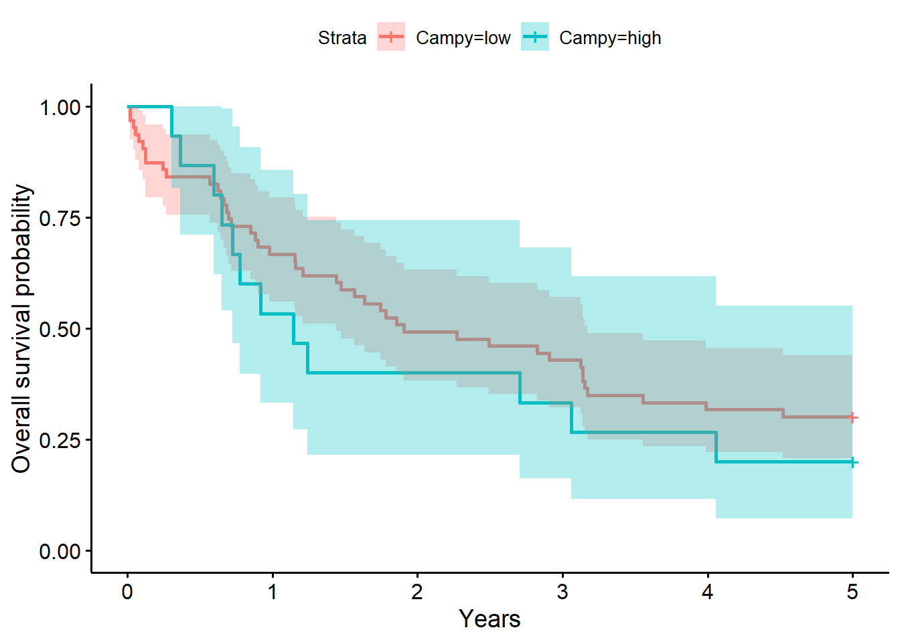
f3# overall survival timeCall: survfit(formula = S_5yr ~ 1 + Campy, data = full_dat)
n events median 0.95LCL 0.95UCL
Campy=low 63 44 1.91 1.440 3.17
Campy=high 15 12 1.14 0.723 NAsummary(f3, times = 1) # survival probability at 1 yearCall: survfit(formula = S_5yr ~ 1 + Campy, data = full_dat)
Campy=low
time n.risk n.event survival std.err lower 95% CI
1.0000 42.0000 21.0000 0.6667 0.0594 0.5599
upper 95% CI
0.7939
Campy=high
time n.risk n.event survival std.err lower 95% CI
1.000 8.000 7.000 0.533 0.129 0.332
upper 95% CI
0.856 summary(coxph(S_5yr ~ 1 + I(Campy == "high"), data = full_dat))Call:
coxph(formula = S_5yr ~ 1 + I(Campy == "high"), data = full_dat)
n= 78, number of events= 56
coef exp(coef) se(coef) z Pr(>|z|)
I(Campy == "high")TRUE 0.284 1.328 0.327 0.87 0.38
exp(coef) exp(-coef) lower .95 upper .95
I(Campy == "high")TRUE 1.33 0.753 0.7 2.52
Concordance= 0.52 (se = 0.026 )
Likelihood ratio test= 0.72 on 1 df, p=0.4
Wald test = 0.76 on 1 df, p=0.4
Score (logrank) test = 0.76 on 1 df, p=0.4# getting the number at risk over years 0:10
summary(f3, times = c(0:5), extend=T)Call: survfit(formula = S_5yr ~ 1 + Campy, data = full_dat)
Campy=low
time n.risk n.event survival std.err lower 95% CI upper 95% CI
0 63 0 1.000 0.0000 1.000 1.000
1 42 21 0.667 0.0594 0.560 0.794
2 31 11 0.492 0.0630 0.383 0.632
3 27 4 0.429 0.0623 0.322 0.570
4 20 7 0.317 0.0586 0.221 0.456
5 0 1 0.302 0.0578 0.207 0.439
Campy=high
time n.risk n.event survival std.err lower 95% CI upper 95% CI
0 15 0 1.000 0.000 1.0000 1.000
1 8 7 0.533 0.129 0.3322 0.856
2 6 2 0.400 0.126 0.2152 0.743
3 5 1 0.333 0.122 0.1630 0.682
4 4 1 0.267 0.114 0.1152 0.617
5 0 1 0.200 0.103 0.0727 0.550# compare groups
survdiff(S_5yr ~ Campy, data = full_dat)Call:
survdiff(formula = S_5yr ~ Campy, data = full_dat)
N Observed Expected (O-E)^2/E (O-E)^2/V
Campy=low 63 44 46.45 0.130 0.765
Campy=high 15 12 9.55 0.631 0.765
Chisq= 0.8 on 1 degrees of freedom, p= 0.4 The model above for the survival decomposed by Campy abundance strata (low versus high; i.e., Campy abundance greater than 0, the median) shows that time to death after surgery is between 1.44 to 3.17 years (median=1.91 years) for low abundance. The one year after surgery survival probability is .67 (95% CI, [.56, .79]). For individuals with high Campy abundance, the time to death after surgery is between 0.72 to 5.06 years (median=1.14 years) for high abundance. The one year after surgery survival probability is .53 (95% CI, [.33, .86]).
The LRT comparing the model with Campy to the baseline model was not significant (\(G^2(1)=0.8, p=0.40\)). Giving evidence that Campy (presence (high) versus absence (low)) did not significantly differentiate survival time in this sample.
With Covariates
f3.1 <- survfit(S_5yr ~ 1 + Campy + I(age > median(age) )+ female, data = full_dat)
f3.1# overall survival timeCall: survfit(formula = S_5yr ~ 1 + Campy + I(age > median(age)) +
female, data = full_dat)
n events median 0.95LCL
Campy=low, I(age > median(age))=FALSE, female=0 23 15 2.908 1.2101
Campy=low, I(age > median(age))=FALSE, female=1 8 8 1.554 0.7173
Campy=low, I(age > median(age))=TRUE , female=0 27 16 3.170 1.4401
Campy=low, I(age > median(age))=TRUE , female=1 5 5 0.682 0.0438
Campy=high, I(age > median(age))=FALSE, female=0 7 7 0.723 0.5969
Campy=high, I(age > median(age))=FALSE, female=1 1 1 1.144 NA
Campy=high, I(age > median(age))=TRUE , female=0 7 4 4.055 0.7748
0.95UCL
Campy=low, I(age > median(age))=FALSE, female=0 NA
Campy=low, I(age > median(age))=FALSE, female=1 NA
Campy=low, I(age > median(age))=TRUE , female=0 NA
Campy=low, I(age > median(age))=TRUE , female=1 NA
Campy=high, I(age > median(age))=FALSE, female=0 NA
Campy=high, I(age > median(age))=FALSE, female=1 NA
Campy=high, I(age > median(age))=TRUE , female=0 NAsummary(f3.1, times = 1, extend=T) # survival probability at 1 yearCall: survfit(formula = S_5yr ~ 1 + Campy + I(age > median(age)) +
female, data = full_dat)
Campy=low, I(age > median(age))=FALSE, female=0
time n.risk n.event survival std.err lower 95% CI
1.0000 16.0000 7.0000 0.6957 0.0959 0.5309
upper 95% CI
0.9116
Campy=low, I(age > median(age))=FALSE, female=1
time n.risk n.event survival std.err lower 95% CI
1.000 5.000 3.000 0.625 0.171 0.365
upper 95% CI
1.000
Campy=low, I(age > median(age))=TRUE , female=0
time n.risk n.event survival std.err lower 95% CI
1.0000 20.0000 7.0000 0.7407 0.0843 0.5926
upper 95% CI
0.9259
Campy=low, I(age > median(age))=TRUE , female=1
time n.risk n.event survival std.err lower 95% CI
1.0000 1.0000 4.0000 0.2000 0.1789 0.0346
upper 95% CI
1.0000
Campy=high, I(age > median(age))=FALSE, female=0
time n.risk n.event survival std.err lower 95% CI
1.0000 2.0000 5.0000 0.2857 0.1707 0.0886
upper 95% CI
0.9218
Campy=high, I(age > median(age))=FALSE, female=1
time n.risk n.event survival std.err lower 95% CI
1 1 0 1 0 1
upper 95% CI
1
Campy=high, I(age > median(age))=TRUE , female=0
time n.risk n.event survival std.err lower 95% CI
1.000 5.000 2.000 0.714 0.171 0.447
upper 95% CI
1.000 summary(coxph(S_5yr ~ 1 + I(Campy == "high") + I(age > median(age)) + female, data = full_dat))Call:
coxph(formula = S_5yr ~ 1 + I(Campy == "high") + I(age > median(age)) +
female, data = full_dat)
n= 78, number of events= 56
coef exp(coef) se(coef) z Pr(>|z|)
I(Campy == "high")TRUE 0.450 1.569 0.333 1.35 0.177
I(age > median(age))TRUE -0.243 0.784 0.286 -0.85 0.395
female 1.043 2.838 0.338 3.09 0.002 **
---
Signif. codes: 0 '***' 0.001 '**' 0.01 '*' 0.05 '.' 0.1 ' ' 1
exp(coef) exp(-coef) lower .95 upper .95
I(Campy == "high")TRUE 1.569 0.637 0.816 3.02
I(age > median(age))TRUE 0.784 1.275 0.448 1.37
female 2.838 0.352 1.463 5.50
Concordance= 0.604 (se = 0.037 )
Likelihood ratio test= 11.4 on 3 df, p=0.01
Wald test = 13 on 3 df, p=0.005
Score (logrank) test = 14.1 on 3 df, p=0.003Prevo
f4 <- survfit(S_5yr ~ 1 + Prevo, data = full_dat)
ggsurvplot(
fit = survfit(
S_5yr ~ 1 + Prevo,
data = full_dat,robust = T
),
conf.int = T,
xlab = "Years",
ylab = "Overall survival probability")
f4# overall survival timeCall: survfit(formula = S_5yr ~ 1 + Prevo, data = full_dat)
n events median 0.95LCL 0.95UCL
Prevo=low 44 29 3.016 1.747 NA
Prevo=high 34 27 0.949 0.695 2.83summary(f4, times = 1) # survival probability at 1 yearCall: survfit(formula = S_5yr ~ 1 + Prevo, data = full_dat)
Prevo=low
time n.risk n.event survival std.err lower 95% CI
1.0000 34.0000 10.0000 0.7727 0.0632 0.6583
upper 95% CI
0.9070
Prevo=high
time n.risk n.event survival std.err lower 95% CI
1.0000 16.0000 18.0000 0.4706 0.0856 0.3295
upper 95% CI
0.6722 summary(coxph(S_5yr ~ I(Prevo == "high"), data = full_dat))Call:
coxph(formula = S_5yr ~ I(Prevo == "high"), data = full_dat)
n= 78, number of events= 56
coef exp(coef) se(coef) z Pr(>|z|)
I(Prevo == "high")TRUE 0.543 1.721 0.269 2.01 0.044 *
---
Signif. codes: 0 '***' 0.001 '**' 0.01 '*' 0.05 '.' 0.1 ' ' 1
exp(coef) exp(-coef) lower .95 upper .95
I(Prevo == "high")TRUE 1.72 0.581 1.01 2.92
Concordance= 0.579 (se = 0.034 )
Likelihood ratio test= 3.99 on 1 df, p=0.05
Wald test = 4.06 on 1 df, p=0.04
Score (logrank) test = 4.16 on 1 df, p=0.04# getting the number at risk over years 0:10
summary(f4, times = c(0:5), extend=T)Call: survfit(formula = S_5yr ~ 1 + Prevo, data = full_dat)
Prevo=low
time n.risk n.event survival std.err lower 95% CI upper 95% CI
0 44 0 1.000 0.0000 1.000 1.000
1 34 10 0.773 0.0632 0.658 0.907
2 25 9 0.568 0.0747 0.439 0.735
3 22 3 0.500 0.0754 0.372 0.672
4 17 5 0.386 0.0734 0.266 0.561
5 0 2 0.341 0.0715 0.226 0.514
Prevo=high
time n.risk n.event survival std.err lower 95% CI upper 95% CI
0 34 0 1.000 0.0000 1.000 1.000
1 16 18 0.471 0.0856 0.329 0.672
2 12 4 0.353 0.0820 0.224 0.556
3 10 2 0.294 0.0781 0.175 0.495
4 7 3 0.206 0.0693 0.106 0.398
5 0 0 0.206 0.0693 0.106 0.398# compare groups
survdiff(S_5yr ~ Prevo, data = full_dat)Call:
survdiff(formula = S_5yr ~ Prevo, data = full_dat)
N Observed Expected (O-E)^2/E (O-E)^2/V
Prevo=low 44 29 36.2 1.44 4.15
Prevo=high 34 27 19.8 2.65 4.15
Chisq= 4.2 on 1 degrees of freedom, p= 0.04 The model above for the survival decomposed by Prevo abundance strata (low versus high; i.e., Prevo abundance greater than 1.2, the median) shows that time to death after surgery is between 1.75 to 5.06 years (median=3.02 years) for low abundance. The one year after surgery survival probability is .78 (95% CI, [.65, .91]). For individuals with high Prevo abundance, the time to death after surgery is between 0.70 to 2.83 years (median=0.95 years) for high abundance. The one year after surgery survival probability is .47 (95% CI, [.33, .67]).
The LRT comparing the model with Prevo to the baseline model was not significant (\(G^2(1)=2.0, p=0.20\)). Giving evidence that Prevo (presence (high) versus absence (low)) did not significantly differentiate survival time in this sample.
With covariates
f4.1 <- survfit(S_5yr ~ 1 + Prevo + I(age > median(age) )+ female, data = full_dat)
f4.1# overall survival timeCall: survfit(formula = S_5yr ~ 1 + Prevo + I(age > median(age)) +
female, data = full_dat)
n events median 0.95LCL
Prevo=low, I(age > median(age))=FALSE, female=0 20 13 3.0157 1.7467
Prevo=low, I(age > median(age))=FALSE, female=1 5 5 1.6345 0.7173
Prevo=low, I(age > median(age))=TRUE , female=0 18 10 4.0205 1.5661
Prevo=low, I(age > median(age))=TRUE , female=1 1 1 0.0438 NA
Prevo=high, I(age > median(age))=FALSE, female=0 10 9 0.6858 0.5695
Prevo=high, I(age > median(age))=FALSE, female=1 4 4 1.3087 0.2683
Prevo=high, I(age > median(age))=TRUE , female=0 16 10 2.9432 0.6954
Prevo=high, I(age > median(age))=TRUE , female=1 4 4 0.7666 0.0192
0.95UCL
Prevo=low, I(age > median(age))=FALSE, female=0 NA
Prevo=low, I(age > median(age))=FALSE, female=1 NA
Prevo=low, I(age > median(age))=TRUE , female=0 NA
Prevo=low, I(age > median(age))=TRUE , female=1 NA
Prevo=high, I(age > median(age))=FALSE, female=0 NA
Prevo=high, I(age > median(age))=FALSE, female=1 NA
Prevo=high, I(age > median(age))=TRUE , female=0 NA
Prevo=high, I(age > median(age))=TRUE , female=1 NAsummary(f4.1, times = 1, extend=T) # survival probability at 1 yearCall: survfit(formula = S_5yr ~ 1 + Prevo + I(age > median(age)) +
female, data = full_dat)
Prevo=low, I(age > median(age))=FALSE, female=0
time n.risk n.event survival std.err lower 95% CI
1.0000 16.0000 4.0000 0.8000 0.0894 0.6426
upper 95% CI
0.9960
Prevo=low, I(age > median(age))=FALSE, female=1
time n.risk n.event survival std.err lower 95% CI
1.000 3.000 2.000 0.600 0.219 0.293
upper 95% CI
1.000
Prevo=low, I(age > median(age))=TRUE , female=0
time n.risk n.event survival std.err lower 95% CI
1.0000 15.0000 3.0000 0.8333 0.0878 0.6778
upper 95% CI
1.0000
Prevo=low, I(age > median(age))=TRUE , female=1
time n.risk n.event survival std.err lower 95% CI
1 0 1 0 NaN NA
upper 95% CI
NA
Prevo=high, I(age > median(age))=FALSE, female=0
time n.risk n.event survival std.err lower 95% CI
1.0000 2.0000 8.0000 0.2000 0.1265 0.0579
upper 95% CI
0.6908
Prevo=high, I(age > median(age))=FALSE, female=1
time n.risk n.event survival std.err lower 95% CI
1.000 3.000 1.000 0.750 0.217 0.426
upper 95% CI
1.000
Prevo=high, I(age > median(age))=TRUE , female=0
time n.risk n.event survival std.err lower 95% CI
1.000 10.000 6.000 0.625 0.121 0.428
upper 95% CI
0.914
Prevo=high, I(age > median(age))=TRUE , female=1
time n.risk n.event survival std.err lower 95% CI
1.0000 1.0000 3.0000 0.2500 0.2165 0.0458
upper 95% CI
1.0000 summary(coxph(S_5yr ~ 1 + I(Prevo == "high") + I(age > median(age)) + female, data = full_dat))Call:
coxph(formula = S_5yr ~ 1 + I(Prevo == "high") + I(age > median(age)) +
female, data = full_dat)
n= 78, number of events= 56
coef exp(coef) se(coef) z Pr(>|z|)
I(Prevo == "high")TRUE 0.509 1.664 0.288 1.77 0.077 .
I(age > median(age))TRUE -0.350 0.704 0.293 -1.20 0.232
female 0.823 2.276 0.345 2.38 0.017 *
---
Signif. codes: 0 '***' 0.001 '**' 0.01 '*' 0.05 '.' 0.1 ' ' 1
exp(coef) exp(-coef) lower .95 upper .95
I(Prevo == "high")TRUE 1.664 0.601 0.947 2.93
I(age > median(age))TRUE 0.704 1.420 0.397 1.25
female 2.276 0.439 1.157 4.48
Concordance= 0.638 (se = 0.034 )
Likelihood ratio test= 12.8 on 3 df, p=0.005
Wald test = 14.4 on 3 df, p=0.002
Score (logrank) test = 15.5 on 3 df, p=0.001Combining Microbiome
f5 <- survfit(S_5yr ~ 1 + micro_low, data = full_dat)
ggsurvplot(
fit = f5,
conf.int = T,
xlab = "Years",
ylab = "Overall survival probability")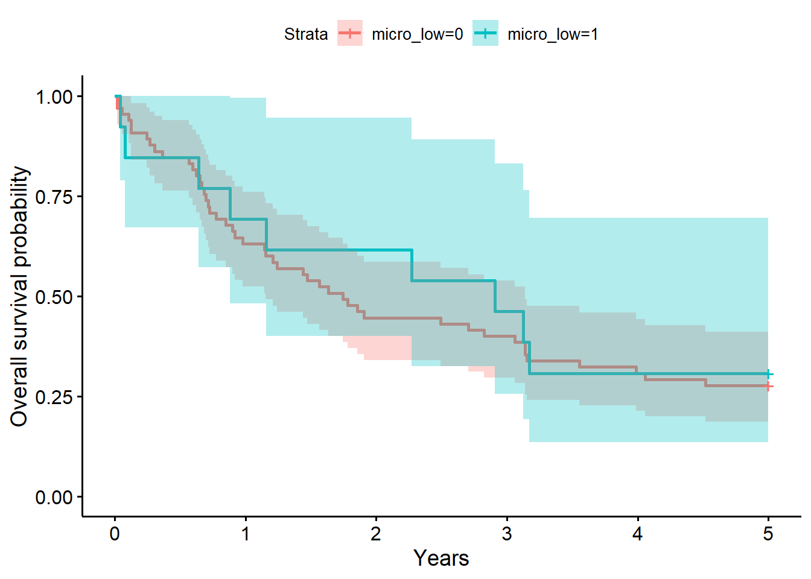
f5 # overall survival timeCall: survfit(formula = S_5yr ~ 1 + micro_low, data = full_dat)
n events median 0.95LCL 0.95UCL
micro_low=0 65 47 1.75 1.153 3.14
micro_low=1 13 9 2.91 0.882 NAsummary(f5 , times = 1, extend=T) # survival probability at 1 yearCall: survfit(formula = S_5yr ~ 1 + micro_low, data = full_dat)
micro_low=0
time n.risk n.event survival std.err lower 95% CI
1.0000 41.0000 24.0000 0.6308 0.0599 0.5237
upper 95% CI
0.7597
micro_low=1
time n.risk n.event survival std.err lower 95% CI
1.000 9.000 4.000 0.692 0.128 0.482
upper 95% CI
0.995 summary(coxph(S_5yr~ micro_low, data = full_dat))Call:
coxph(formula = S_5yr ~ micro_low, data = full_dat)
n= 78, number of events= 56
coef exp(coef) se(coef) z Pr(>|z|)
micro_low -0.114 0.892 0.364 -0.31 0.75
exp(coef) exp(-coef) lower .95 upper .95
micro_low 0.892 1.12 0.437 1.82
Concordance= 0.509 (se = 0.027 )
Likelihood ratio test= 0.1 on 1 df, p=0.8
Wald test = 0.1 on 1 df, p=0.8
Score (logrank) test = 0.1 on 1 df, p=0.8## get the risk events information
summary(f5 , times = 0:5, extend=T) Call: survfit(formula = S_5yr ~ 1 + micro_low, data = full_dat)
micro_low=0
time n.risk n.event survival std.err lower 95% CI upper 95% CI
0 65 0 1.000 0.0000 1.000 1.000
1 41 24 0.631 0.0599 0.524 0.760
2 29 12 0.446 0.0617 0.340 0.585
3 26 3 0.400 0.0608 0.297 0.539
4 20 6 0.308 0.0572 0.214 0.443
5 0 2 0.277 0.0555 0.187 0.410
micro_low=1
time n.risk n.event survival std.err lower 95% CI upper 95% CI
0 13 0 1.000 0.000 1.000 1.000
1 9 4 0.692 0.128 0.482 0.995
2 8 1 0.615 0.135 0.400 0.946
3 6 2 0.462 0.138 0.257 0.830
4 4 2 0.308 0.128 0.136 0.695
5 0 0 0.308 0.128 0.136 0.695The model above for the survival decomposed by whether all microbiome (prevo, fuso, campy, strepto) were classified as ‘’low’’ abundance compared to individuals with at least one high abundance level. For the group that is all low, the results shows that time to death after surgery is between 0.88 to 5\(+\) years (median=2.91 years). The one year after surgery survival probability is .69 (95% CI, [.48, .99]). For individuals with at least one high abundance, the time to death after surgery is between 1.15 to 3.14 years (median=1.75 years). The one year after surgery survival probability is .63 (95% CI, [.52, .76]).
In the Cox Proportional Hazards model, being low on all microbiome was not significantly associated with changes in the harzard (\(est=-0.11, se = 0.36, p = .75, exp(est)=0.89\)). The LRT comparing the model with low abundance on all microbiome to the baseline model was not significant (\(G^2(1)=0.1, p=0.80\)). Giving evidence that Prevo (presence (high) versus absence (low)) did not significantly differentiate survival time in this sample.
With covariates
f5.1 <- survfit(S_5yr ~ 1 + micro_low + I(age > median(age) )+ female, data = full_dat)
f5.1# overall survival timeCall: survfit(formula = S_5yr ~ 1 + micro_low + I(age > median(age)) +
female, data = full_dat)
n events median 0.95LCL
micro_low=0, I(age > median(age))=FALSE, female=0 21 17 1.2101 0.6653
micro_low=0, I(age > median(age))=FALSE, female=1 8 8 1.5537 1.1444
micro_low=0, I(age > median(age))=TRUE , female=0 32 18 3.7700 1.5661
micro_low=0, I(age > median(age))=TRUE , female=1 4 4 0.7666 0.0192
micro_low=1, I(age > median(age))=FALSE, female=0 9 5 3.1239 2.2724
micro_low=1, I(age > median(age))=FALSE, female=1 1 1 0.0794 NA
micro_low=1, I(age > median(age))=TRUE , female=0 2 2 2.1643 1.1581
micro_low=1, I(age > median(age))=TRUE , female=1 1 1 0.0438 NA
0.95UCL
micro_low=0, I(age > median(age))=FALSE, female=0 4.52
micro_low=0, I(age > median(age))=FALSE, female=1 NA
micro_low=0, I(age > median(age))=TRUE , female=0 NA
micro_low=0, I(age > median(age))=TRUE , female=1 NA
micro_low=1, I(age > median(age))=FALSE, female=0 NA
micro_low=1, I(age > median(age))=FALSE, female=1 NA
micro_low=1, I(age > median(age))=TRUE , female=0 NA
micro_low=1, I(age > median(age))=TRUE , female=1 NAsummary(f5.1, times = 1, extend=T) # survival probability at 1 yearCall: survfit(formula = S_5yr ~ 1 + micro_low + I(age > median(age)) +
female, data = full_dat)
micro_low=0, I(age > median(age))=FALSE, female=0
time n.risk n.event survival std.err lower 95% CI
1.000 11.000 10.000 0.524 0.109 0.348
upper 95% CI
0.788
micro_low=0, I(age > median(age))=FALSE, female=1
time n.risk n.event survival std.err lower 95% CI
1.000 6.000 2.000 0.750 0.153 0.503
upper 95% CI
1.000
micro_low=0, I(age > median(age))=TRUE , female=0
time n.risk n.event survival std.err lower 95% CI
1.0000 23.0000 9.0000 0.7188 0.0795 0.5787
upper 95% CI
0.8927
micro_low=0, I(age > median(age))=TRUE , female=1
time n.risk n.event survival std.err lower 95% CI
1.0000 1.0000 3.0000 0.2500 0.2165 0.0458
upper 95% CI
1.0000
micro_low=1, I(age > median(age))=FALSE, female=0
time n.risk n.event survival std.err lower 95% CI
1.000 7.000 2.000 0.778 0.139 0.549
upper 95% CI
1.000
micro_low=1, I(age > median(age))=FALSE, female=1
time n.risk n.event survival std.err lower 95% CI
1 0 1 0 NaN NA
upper 95% CI
NA
micro_low=1, I(age > median(age))=TRUE , female=0
time n.risk n.event survival std.err lower 95% CI
1 2 0 1 0 1
upper 95% CI
1
micro_low=1, I(age > median(age))=TRUE , female=1
time n.risk n.event survival std.err lower 95% CI
1 0 1 0 NaN NA
upper 95% CI
NA summary(coxph(S_5yr ~ 1 + micro_low + I(age > median(age)) + female, data = full_dat))Call:
coxph(formula = S_5yr ~ 1 + micro_low + I(age > median(age)) +
female, data = full_dat)
n= 78, number of events= 56
coef exp(coef) se(coef) z Pr(>|z|)
micro_low -0.0273 0.9731 0.4019 -0.07 0.9459
I(age > median(age))TRUE -0.2130 0.8081 0.3030 -0.70 0.4821
female 0.9864 2.6814 0.3532 2.79 0.0052 **
---
Signif. codes: 0 '***' 0.001 '**' 0.01 '*' 0.05 '.' 0.1 ' ' 1
exp(coef) exp(-coef) lower .95 upper .95
micro_low 0.973 1.028 0.443 2.14
I(age > median(age))TRUE 0.808 1.237 0.446 1.46
female 2.681 0.373 1.342 5.36
Concordance= 0.608 (se = 0.035 )
Likelihood ratio test= 9.75 on 3 df, p=0.02
Wald test = 11.4 on 3 df, p=0.01
Score (logrank) test = 12.4 on 3 df, p=0.006
sessionInfo()R version 4.0.5 (2021-03-31)
Platform: x86_64-w64-mingw32/x64 (64-bit)
Running under: Windows 10 x64 (build 22000)
Matrix products: default
locale:
[1] LC_COLLATE=English_United States.1252
[2] LC_CTYPE=English_United States.1252
[3] LC_MONETARY=English_United States.1252
[4] LC_NUMERIC=C
[5] LC_TIME=English_United States.1252
attached base packages:
[1] stats graphics grDevices utils datasets methods base
other attached packages:
[1] lubridate_1.7.10 survminer_0.4.9 ggpubr_0.4.0 rms_6.2-0
[5] SparseM_1.81 Hmisc_4.5-0 Formula_1.2-4 survival_3.2-10
[9] cowplot_1.1.1 dendextend_1.14.0 ggdendro_0.1.22 reshape2_1.4.4
[13] car_3.0-10 carData_3.0-4 gvlma_1.0.0.3 patchwork_1.1.1
[17] viridis_0.5.1 viridisLite_0.3.0 gridExtra_2.3 xtable_1.8-4
[21] kableExtra_1.3.4 MASS_7.3-53.1 data.table_1.14.0 readxl_1.3.1
[25] forcats_0.5.1 stringr_1.4.0 dplyr_1.0.5 purrr_0.3.4
[29] readr_1.4.0 tidyr_1.1.3 tibble_3.1.0 ggplot2_3.3.5
[33] tidyverse_1.3.0 lmerTest_3.1-3 lme4_1.1-26 Matrix_1.3-2
[37] vegan_2.5-7 lattice_0.20-41 permute_0.9-5 phyloseq_1.34.0
[41] workflowr_1.6.2
loaded via a namespace (and not attached):
[1] utf8_1.1.4 tidyselect_1.1.0 htmlwidgets_1.5.3
[4] grid_4.0.5 munsell_0.5.0 codetools_0.2-18
[7] statmod_1.4.35 withr_2.4.1 colorspace_2.0-0
[10] Biobase_2.50.0 highr_0.8 knitr_1.31
[13] rstudioapi_0.13 stats4_4.0.5 ggsignif_0.6.1
[16] labeling_0.4.2 git2r_0.28.0 KMsurv_0.1-5
[19] farver_2.1.0 rhdf5_2.34.0 rprojroot_2.0.2
[22] vctrs_0.3.6 generics_0.1.0 TH.data_1.0-10
[25] xfun_0.21 R6_2.5.0 rhdf5filters_1.2.0
[28] assertthat_0.2.1 promises_1.2.0.1 scales_1.1.1
[31] multcomp_1.4-16 nnet_7.3-15 gtable_0.3.0
[34] conquer_1.0.2 sandwich_3.0-0 rlang_0.4.10
[37] MatrixModels_0.5-0 systemfonts_1.0.1 splines_4.0.5
[40] rstatix_0.7.0 broom_0.7.5 checkmate_2.0.0
[43] BiocManager_1.30.10 yaml_2.2.1 abind_1.4-5
[46] modelr_0.1.8 backports_1.2.1 httpuv_1.5.5
[49] tools_4.0.5 ellipsis_0.3.1 jquerylib_0.1.3
[52] biomformat_1.18.0 RColorBrewer_1.1-2 BiocGenerics_0.36.0
[55] Rcpp_1.0.7 plyr_1.8.6 base64enc_0.1-3
[58] progress_1.2.2 zlibbioc_1.36.0 ps_1.6.0
[61] prettyunits_1.1.1 rpart_4.1-15 S4Vectors_0.28.1
[64] zoo_1.8-9 haven_2.3.1 cluster_2.1.1
[67] fs_1.5.0 magrittr_2.0.1 openxlsx_4.2.3
[70] reprex_1.0.0 mvtnorm_1.1-1 whisker_0.4
[73] matrixStats_0.58.0 hms_1.0.0 evaluate_0.14
[76] rio_0.5.26 jpeg_0.1-8.1 IRanges_2.24.1
[79] compiler_4.0.5 crayon_1.4.1 minqa_1.2.4
[82] htmltools_0.5.1.1 mgcv_1.8-34 later_1.1.0.1
[85] DBI_1.1.1 dbplyr_2.1.0 boot_1.3-27
[88] ade4_1.7-16 cli_2.3.1 parallel_4.0.5
[91] igraph_1.2.6 km.ci_0.5-2 pkgconfig_2.0.3
[94] numDeriv_2016.8-1.1 foreign_0.8-81 xml2_1.3.2
[97] foreach_1.5.1 svglite_2.0.0 bslib_0.2.4
[100] multtest_2.46.0 webshot_0.5.2 XVector_0.30.0
[103] rvest_1.0.0 digest_0.6.27 Biostrings_2.58.0
[106] rmarkdown_2.7 cellranger_1.1.0 survMisc_0.5.5
[109] htmlTable_2.1.0 curl_4.3 quantreg_5.85
[112] nloptr_1.2.2.2 lifecycle_1.0.0 nlme_3.1-152
[115] jsonlite_1.7.2 Rhdf5lib_1.12.1 fansi_0.4.2
[118] pillar_1.5.1 httr_1.4.2 glue_1.4.2
[121] zip_2.1.1 png_0.1-7 iterators_1.0.13
[124] stringi_1.5.3 sass_0.3.1 polspline_1.1.19
[127] latticeExtra_0.6-29 ape_5.4-1